Versión generada el 11/11/2026 23:25 con informe/armar_informe.py.
16 figuras, 27 tablas.
1. Resumen
Problema. Se diseñó una celda de abastecimiento de piezas con dos robots que comparten la misma pieza:
un AGV omnidireccional OSOYOO con ruedas mecanum lleva un cubo de 40 mm y 0,10 kg desde una estación de
carga A hasta la estación B, en un recorrido con avance y desplazamiento lateral;
un brazo antropomórfico 6R, de diseño propio e imprimible en 3D, toma la pieza de la bandeja del AGV y la
coloca girada 90° en el alojamiento de una bandeja de trabajo.
Se fijaron requisitos cuantitativos para los dos robots. Los más exigentes son:
brazo: error de colocación ≤ 1 mm y ≤ 1°, ciclo ≤ 12 s, carga máxima 0,25 kg;
AGV: error de llegada a B ≤ 20 mm y ≤ 3°, traslado ≤ 15 s.
Desarrollo. Una sola tabla de parámetros (parametros.json) alimenta todo lo que sigue.
CAD del brazo: lo genera un script paramétrico de Fusion. Produce los STL/3MF y las propiedades de masa.
Cinemática del brazo: tabla DH estándar; cinemática inversa analítica con 8 soluciones y selección por
continuidad; Jacobiano geométrico con sus singularidades en forma cerrada.
Dinámica del brazo: Newton–Euler recursivo, contrastado con Lagrange. Con ella se dimensionaron los
accionamientos y la reducción del eje 2 pasó de 20 a 30.
Trayectorias del brazo: quínticas articulares y tramos cartesianos con interpolación de orientación
por eje–ángulo.
Control del brazo: se compararon tres leyes sobre la planta simulada en Octave: PD con compensación
de gravedad, par calculado y par calculado con acción integral.
Verificación estructural: se verificó la pieza impresa crítica (el eslabón L2) teniendo en cuenta la
dirección de las capas.
CoppeliaSim: la escena reproduce el resultado del lazo de control con juntas cinemáticas.
AGV: se desarrollaron el modelo cinemático y dinámico (con el motor CC), el método de identificación y
un firmware para la Arduino Mega con dos lazos (PI de ruedas a 100 Hz y lazo de pose a 50 Hz), watchdog
y registro. La simulación en Octave ejecuta el mismo algoritmo que el firmware.
Interfaz: una sola interfaz en Qt opera el brazo virtual y el AGV, en modo virtual o físico.
Resultados principales.
Control del brazo. El par calculado con integral cumple todos los requisitos en los tres ensayos, el
nominal, el de carga máxima con perturbación y el de masas +15 %: colocación ≤ 0,19 mm y ≤ 0,04°,
seguimiento ≤ 2,7 mm. El PD con gravedad y el par calculado solo no los cumplen cuando el modelo tiene
error.
Ciclo del brazo: dura 10,1 s.
Estructura. L2 resiste con un factor de seguridad ≥ 5,4 incluso con el motor 2 saturado contra un
obstáculo. No entra en una cama de 220 × 220 mm, así que se dividió en dos mitades con pasadores. La
rigidez, y no la resistencia, es lo que limita.
AGV en el kit real (ensayos del 11/11/2026, órdenes por WiFi, medición externa sobre las baldosas).
Identificación: 1482 cuentas por vuelta (reducción ~34:1, no 75:1 como dice la ficha), K ≈ 0,125
rad/s/PWM y zonas muertas de 66–104 PWM en el piso. Con eso se ajustó el modelo.
Lazo abierto: no completa las maniobras. En el lateral no se movió, el giro de 90° quedó en 26° y
A→B quedó a 52 cm.
Lazo cerrado con odometría calibrada: A→B en 15 s a 15 cm de B, repetible y con la orientación
exacta. El giro de 90° es exacto y el avance de 1 m deja 3–5 cm.
Lateral: es el movimiento menos preciso. Los rodillos deslizan (−20 %), el robot se corre hacia
adelante y, con 0,5 kg, termina girado 8–12° sin que los encoders lo vean.
Requisito R‑AGV‑3 (20 mm, 3°): se cumple en la simulación (4,9 mm) pero no en el piso. Para cumplirlo
hace falta medir la pose sin pasar por las ruedas (IMU o marcas).
CoppeliaSim: coincide con el cálculo hasta 10⁻¹³ rad.
2. Aplicación y requisitos
2.1 Operación
Celda de abastecimiento de piezas.
En la estación de carga A, el AGV recibe una pieza en su bandeja.
La lleva hasta la estación B, al lado de la mesa del brazo: 1,2 m de avance y una aproximación
lateral de 0,6 m.
El brazo 6R toma la pieza de la bandeja del AGV y la coloca en el alojamiento de la bandeja de trabajo
C, girada 90° alrededor de la vertical.
El AGV vuelve vacío a A.
La aplicación se eligió porque usa las dos capacidades que pide el enunciado:
el desplazamiento lateral del mecanum (§5.4);
un tramo cartesiano con orientación especificada del brazo: el descenso vertical para insertar la pieza.
Además, la pieza es la misma en los dos robots: misma masa, mismo centro de masa y mismas condiciones de
entrega.
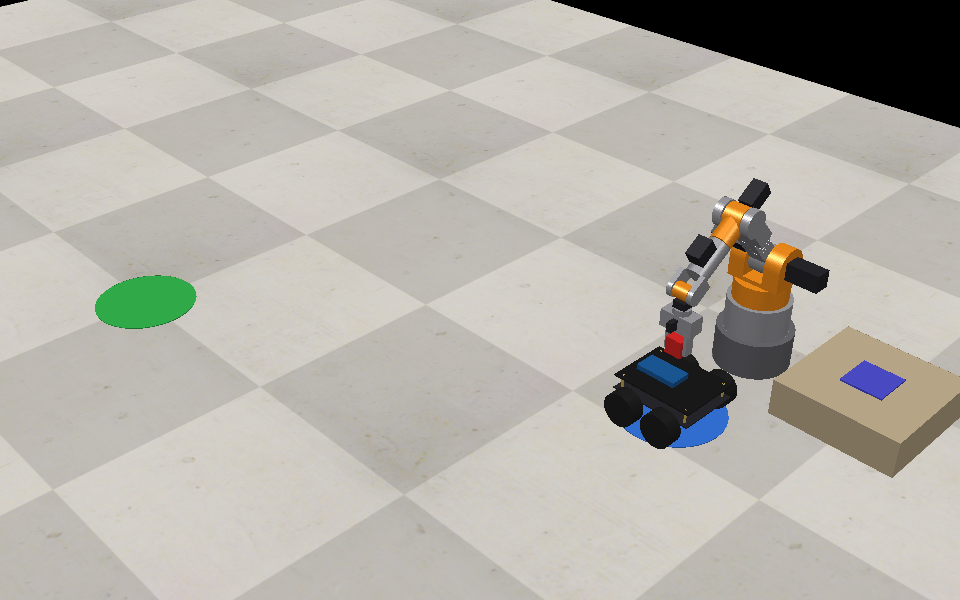
Figura 1. Celda en CoppeliaSim: el AGV llega a B con la pieza y el brazo la toma de su bandeja
2.2 Pieza y estaciones
Tabla 1. Datos de la pieza
Dato
Valor
Origen
Forma
Cubo de 40 × 40 × 40 mm, PLA con lastre interior
definido
Masa
0,100 kg
definido (se ajusta el lastre con balanza)
Centro de masa e inercia
Centro geométrico; m·a²/6 = 2,67·10⁻⁵ kg·m²
calculado (cubo homogéneo equivalente)
Agarre
Pinza paralela de 2 dedos sobre dos caras opuestas; apertura máxima 70 mm
definido
Alojamientos (AGV y bandeja C)
46 × 46 mm con chaflán de entrada
definido
Marcos de referencia (convenciones de la cátedra: SI, radianes, giros positivos antihorarios):
Marco
Definición
{G}
Piso de la celda: origen en la marca de A, x hacia B, z hacia arriba
{AGV}
Centro geométrico del AGV: x hacia adelante, y a la izquierda
{0}
Base del brazo: origen en el eje 1, a la altura del plano de apoyo, z vertical
{TCP}
Punto de herramienta: entre los dedos, en el centro de la pieza tomada
La base del brazo está en (1,2; 0,9) m de {G}, girada −90°, sobre un pedestal de 90 mm. Esa es la altura de
la bandeja del AGV. Así:
la toma (0,30; 0; 0,02) m de {0} coincide con B, donde se detiene el AGV;
la colocación (0; 0,30; 0,02) m de {0} cae en la bandeja C;
las dos tienen aproximaciones 80 mm más arriba.
2.3 Requisitos
Tabla 2. Requisitos del brazo antropomórfico
Id
Requisito
Valor
Justificación
R‑B‑1
Alcance horizontal del TCP con la herramienta hacia abajo
≥ 0,38 m
Toma a 0,30 m más margen a la singularidad de brazo estirado
R‑B‑2
Configuración
6R con muñeca esférica
Permite cinemática inversa analítica por desacople
R‑B‑3
Carga nominal / máxima
0,10 / 0,25 kg
Pieza más margen; la máxima se justifica con el par del eje más exigido
R‑B‑4
Error de posición en la colocación
≤ 1 mm
Holgura del alojamiento: (46 − 44)/2 mm por lado, con la pieza en la pinza
R‑B‑5
Error de orientación en la colocación
≤ 1°
1° desplaza la esquina del cubo ≈ 0,5 mm
R‑B‑6
Error de seguimiento
≤ 5 mm
No tocar el borde del alojamiento en la aproximación
R‑B‑7
Ciclo toma–colocación–retorno
≤ 12 s
Compatible con el ciclo del AGV
R‑B‑8
Velocidad y aceleración articulares
90–180 °/s, 180–360 °/s² según el eje
Accionamientos paso a paso con reducción
R‑B‑9
Fabricación
PLA, cama ≤ 220 × 220 mm
Impresora típica disponible
Tabla 3. Requisitos del AGV
Id
Requisito
Valor
Justificación
R‑AGV‑1
Recorrido A→B
1,2 m en x + 0,6 m lateral
Muestra avance y capacidad lateral
R‑AGV‑2
Velocidad / aceleración del cuerpo
0,25 m/s, 0,30 m/s²
Debajo del límite de rueda; la pieza no desliza (a ≪ μg)
R‑AGV‑3
Error de llegada a B, con referencia externa
≤ 20 mm y ≤ 3°
Capacidad de captura de la pinza: apertura 70 mm para una pieza de 40 mm
R‑AGV‑4
Tiempo de traslado A→B
≤ 15 s
Ciclo total ≤ 45 s
R‑AGV‑5
Período de control de ruedas
10 ms
Resolución de los encoders a baja velocidad y estabilidad del PI
R‑AGV‑6
Seguridad
Parada desde la interfaz, parada ante pérdida de comunicación (300 ms), límites de PWM y velocidad, reinicio controlado
Enunciado §5.5
Ciclo completo: carga en A → traslado A→B (≤ 15 s) → toma y colocación (≤ 12 s) → retorno (≤ 15 s), en
total ≤ 45 s.
Cambios de requisitos. Durante el desarrollo se ajustaron tres valores, y cada cambio quedó registrado
con su motivo en 00_Aplicacion_y_plan.md §7:
la v_máx del AGV, de 0,20 a 0,25 m/s, para cumplir R‑AGV‑4;
el período de control de ruedas, de 20 a 10 ms;
la velocidad cartesiana del brazo, de 0,10 a 0,15 m/s, para cumplir R‑B‑7.
3. Antecedentes
3.1 Brazos antropomórficos: referencia industrial y diseños imprimibles
Referencia industrial. El brazo se dimensionó como una versión simplificada y a escala del KUKA KR 6 R700,
el robot 3 del TP1 de la cátedra. Su cadena es 6R con muñeca esférica: d₁ = 400, a₁ = 25, a₂ = 315,
a₃ = 35, d₄ = 365 y d₆ = 80 mm.
Se tomaron a₁ = a₃ = 0. Así los ejes de la muñeca se cortan en un punto, el problema inverso se desacopla
en posición y orientación y se resuelve en forma cerrada [Barrientos et al., 2007, §4.3].
Las longitudes se redujeron a 0,18 / 0,20 / 0,20 / 0,05 m, compatibles con la impresión 3D y con la tarea.
Brazos imprimibles de código abierto. Se revisaron dos antecedentes:
BCN3D Moveo: desarrollo educativo de BCN3D con la Generalitat de Catalunya. Usa motores paso a paso
con reducción por correa y electrónica basada en Arduino.
Thor (AngelLM): 6 grados de libertad, 625 mm de alto y 750 g de carga declarada. Usa engranajes
impresos, poleas y correas GT2 y motores paso a paso.
Los dos confirman que la arquitectura elegida es viable con PLA y motores NEMA 17/14 con reducción.
Muestran además las dos transmisiones más usadas en este tipo de brazos: correas con poleas, y reductores
planetarios o cicloidales impresos.
De ellos se tomó el criterio de ubicar los motores cerca de la base para bajar la inercia de los
eslabones distales.
Alternativa considerada: usar servos de modelismo en lugar de pasos a paso. Se descartó porque no dan
el par del eje 2 (≈ 5 N·m) y porque no permiten un lazo de par, que es lo que suponen las leyes de control
dinámico de la sección 7.
3.2 Material impreso y dirección de capas
El PLA impreso por deposición fundida (FDM) es anisótropo:
la resistencia a lo largo de los filamentos es mayor que la de la adhesión entre capas;
Eryildiz (2021) midió 55,5 MPa en probetas planas y 35,5 MPa en probetas paradas, un 36 % menos;
Chacón et al. (2017) encontraron la misma jerarquía: la orientación parada es la más débil, y el espesor de
capa y la velocidad de alimentación también influyen.
Estos datos fijan la orientación de impresión de la pieza crítica (sección 4.B).
3.3 Plataformas omnidireccionales con ruedas mecanum
Origen y principio. La rueda mecanum (Ilon, 1975) tiene rodillos pasivos a 45° alrededor de su
periferia. Cada rueda solo impone la velocidad en la dirección perpendicular al eje de sus rodillos; con
cuatro ruedas en patrón X, la base obtiene tres grados de libertad en el plano.
Modelo. El modelo cinemático (mapa entre velocidades de rueda y del cuerpo, con su pseudoinversa) y la
odometría se tomaron de Lynch y Park (2017), §13.2 y §13.4.
El apunte de la cátedra (Tema VI) trata el accionamiento diferencial, así que el modelo mecanum se
desarrolló a partir de esa fuente.
Esa misma fuente advierte que el deslizamiento de los rodillos degrada la odometría, sobre todo en el
desplazamiento lateral.
Kit. OSOYOO «M2.0 Metal Mecanum» para Arduino Mega 2560: chasis metálico, cuatro motorreductores
GM25‑370 de 75:1 con encoder Hall y driver «Model Y» (2 × TB6612). La documentación se tomó del manual
del fabricante y de la hoja de datos del motor que reunió un compañero de cursada
(referencias/analisis_proyecto_koba.md).
El manual no informa la relación de reducción efectiva, las cuentas por vuelta ni la geometría entre
ruedas: se relevan en el laboratorio.
Los encoders no vienen conectados de fábrica.
3.4 Control
Leyes de control del brazo.
El PD con compensación de gravedad es la ley de referencia, con estabilidad asintótica en
regulación.
El par calculado cancela la dinámica no lineal con el modelo inverso y deja el error como un sistema
lineal desacoplado [Barrientos et al., 2007, §7.2; Spong et al., 2006, cap. 8; apunte Tema V].
Su debilidad conocida es la sensibilidad al error de modelo. Para corregirla se agregó una acción
integral con antiwindup por integración condicionada (Tema V §5.4).
Dinámica inversa. Se calcula con Newton–Euler recursivo. M, c y g salen del método de Walker y Orin
(1982), que evalúa el mismo algoritmo con entradas particulares.
Control del AGV. La arquitectura de dos niveles (velocidad de rueda con encoders y pose con odometría)
es la habitual en plataformas omnidireccionales [Lynch y Park, 2017, §13.2].
3.5 Simulación gráfica
CoppeliaSim permite tres modos de articulación:
cinemático: la posición se impone desde un script;
dinámico: con controladores internos de posición o velocidad;
de par.
Se eligió el modo cinemático (manual oficial, «Joint modes»), para que la escena muestre exactamente la
trayectoria que calculó el lazo de control en Octave sin que intervenga el motor físico del simulador. La
escena se construye y verifica por la API remota ZMQ (Coppelia Robotics, versión 4.10).
4. Diseño
4.A Brazo antropomórfico imprimible
CAD: script paramétrico brazo/cad/fusion_brazo/fusion_brazo.py, que lee parametros/parametros.json.
Documento de Fusion vigente: «robot». Archivos exportados: brazo/stl/*.stl y *.3mf (en mm, en la pose
cero y en el marco {0}). Propiedades de masa: brazo/cad/propiedades_fusion.csv. Uso: brazo/cad/LEEME_CAD.md.
4.A.1 Criterio de diseño y geometría
Cómo se genera el CAD.
El script calcula con la cinemática directa los puntos clave de la pose cero: base O, hombro S, codo E,
muñeca W, brida F y TCP T.
Arma cada eslabón como unión de cilindros y prismas ubicados respecto de esos puntos.
Crea las seis articulaciones de revolución sobre los ejes DH.
Exporta los STL y las propiedades físicas.
Por qué así. Las cotas que importan para el modelo (d₁, a₂, d₄, d₆ y la herramienta) son las mismas
en el CAD, en Octave y en CoppeliaSim. Un cambio de medida en la tabla única se propaga a todo el proyecto
volviendo a ejecutar el script.
Comprobación.verificar_pose_cero.m compara los puntos clave del CAD con la cinemática directa. Los
volúmenes y centros de masa de Octave coinciden con los de Fusion dentro de 0,1 % y 0,01 mm.
Alcance. La geometría es simplificada. Representa bien las masas, las inercias y el volumen
ocupado, pero no detalla alojamientos de rodamientos ni reductores. Esos detalles se indican como
propuesta en 4.A.3 y 4.C.
Tabla 4. Eslabones del brazo (estructura impresa con densidad efectiva de 800 kg/m³; los motores, con la masa del catálogo)
Eslabón
Forma principal
Estructura [kg]
Motor que lleva
Total [kg]
L0 base
Cilindro Ø150 × 80 mm
1,130
M1 (eje 1)
fija
L1 hombro
Torreta Ø130 + horquilla de dos orejas 90 × 40 × 50 mm
1,058
M2 (eje 2)
1,538
L2 brazo
Viga 40 × 44 mm, cubo Ø70 en el hombro, horquilla en el codo; dos mitades
0,487
M3 (eje 3)
0,967
L3 codo
Cubo Ø60 + tubo Ø50
0,169
M4 (eje 4)
0,369
L4 antebrazo
Tubo Ø50 + horquilla de muñeca, orejas de 12 mm
0,181
M5 (eje 5)
0,361
L5 muñeca
Cubo Ø36
0,029
M6 (eje 6)
0,089
L6 brida y pinza
Brida Ø40, cuerpo 40 × 80 × 40 mm, dos dedos 55 × 8 × 24 mm
0,132
Servo de la pinza
0,147
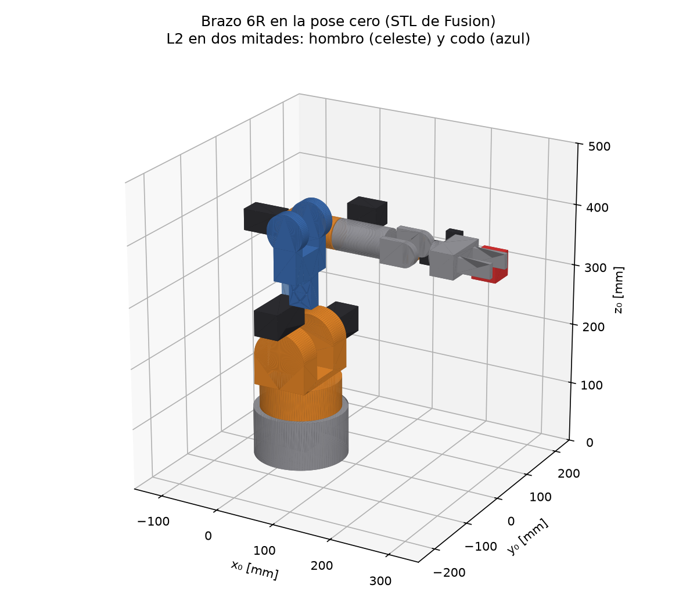
Figura 2. CAD generado en Fusion (pose cero; L2 dividido en dos mitades)
4.A.2 Herramienta
Tipo. Pinza paralela de dos dedos, accionada por un micro servo de 15 g. Los dedos cierran según y₀ en
la toma.
Medidas. Apertura máxima de 70 mm para la pieza de 40 mm. El TCP está a 80 mm de la brida sobre z₆, en
el centro de la pieza tomada.
Margen de captura. La holgura de apertura, (70 − 40)/2 = 15 mm por lado, es la que fija el error de
llegada admisible del AGV (R‑AGV‑3: ≤ 20 mm, junto con el chaflán del alojamiento).
Fuerza de agarre. Para sostener 0,25 kg con μ = 0,3 y una aceleración de 5 m/s² hacen falta
F = m(g + a)/(2μ) ≈ 6 N por dedo. Un micro servo de 0,18 N·m con un brazo de 20 mm entrega ≈ 9 N.
4.A.3 Accionamientos y transmisiones
El dimensionamiento está en la sección 5.B.4 y la verificación a lo largo del ciclo en la 6.A.3.
Tabla 5. Accionamientos del brazo
Eje
Motor (par máx.)
Reducción N
η
Ubicación y transmisión
Uso pico en el ciclo
1
NEMA 17 de 48 mm (0,45 N·m)
20
0,80
En la base, coaxial; reductor planetario impreso de dos etapas
4 %
2
NEMA 17 de 48 mm (0,45 N·m)
30
0,80
En el hombro (L1), coaxial; reductor cicloidal impreso
31 %
3
NEMA 17 de 48 mm (0,45 N·m)
15
0,80
Sobre L2 cerca del hombro; correa GT2 hasta el codo más reductor (el motor cerca del hombro baja la inercia distal)
18 %
4
NEMA 14 de 28 mm (0,12 N·m)
10
0,85
Detrás del codo (contrapeso), coaxial con el antebrazo
1 %
5
NEMA 14 de 28 mm (0,12 N·m)
10
0,85
Sobre el antebrazo; correa hasta el eje de la muñeca
3 %
6
Micro paso a paso (0,05 N·m)
5
0,85
Dentro de la muñeca, coaxial con la brida
0 %
Hipótesis de actuador. Las leyes de control dinámico de la sección 7.A mandan par. Con motores paso a
paso, eso requiere drivers de lazo cerrado con encoder magnético y control de corriente, por ejemplo
de la familia MKS SERVO42 para NEMA 17. Con drivers de paso abiertos, el brazo se controlaría en posición y
las leyes de la sección 7 describirían el lazo interno del driver.
Reductores impresos. Tienen juego y rozamiento apreciables. El rozamiento está en el modelo como
fricción viscosa y de Coulomb del lado articular (valores estimados en parametros.json) y el controlador
conoce solo el 70 % de él. El juego no está modelado: queda como limitación declarada.
Inercia reflejada. N²J_m vale, por ejemplo, 0,0049 kg·m² en el eje 2, del mismo orden que la inercia
del brazo. Está incluida en M(q).
4.B Verificación estructural de una pieza impresa crítica: eslabón L2
Enunciado §4.2: verificar resistencia y deformación de al menos un elemento estructural crítico en una
condición de carga justificada, con propiedades del material impreso que contemplen la dirección de las
capas; método analítico o simulación, con hipótesis y datos identificados.
Método: analítico (viga de pared delgada), con las cargas internas exactas que da Newton–Euler
sobre el ciclo real del brazo. Script: brazo/octave/verificacion_estructural.m; resultados:
brazo/resultados/verificacion_estructural.txt; figura: brazo/resultados/figuras/estructural_L2.png.
4.B.1 Elección del elemento crítico
El momento más grande que puede llegar a una pieza es el par de bloqueo del accionamiento que la carga
(motor saturado contra un obstáculo): τ_bloqueo = N · τ_m,máx, sin descontar el rendimiento (si el
reductor es retroimpulsado, η no protege). Comparación rápida, solo paredes impresas:
Pieza / sección
Momento de bloqueo
Módulo resistente
Tensión nominal
L0 base, cilindro Ø150 (torsión del eje 1, corte entre capas)
20 · 0,45 = 9,0 N·m
2πr²t = 63 600 mm³
0,14 MPa (corte)
L2 brazo, raíz (40 × 44 mm)
30 · 0,45 = 13,5 N·m
3 374 mm³
4,0 MPa
L2 brazo, media sección del solape (40 × 22 mm)
13,5 N·m
1 928 mm³
7,0 MPa
L3 codo, tubo Ø50
15 · 0,45 = 6,75 N·m
πr²t = 3 534 mm³
1,9 MPa
L4 orejas de la muñeca (2 × 40 × 12 mm)
10 · 0,12 = 1,2 N·m
6 400 mm³
0,19 MPa
L2 es el elemento crítico: es el que tiene el momento más grande, porque soporta todo lo que viene
después con el brazo de palanca más largo. Además tiene un problema de fabricación que lo vuelve todavía
más exigido:
L2 no entra en la cama de la impresora. Su envolvente es 70 × 90 × 267 mm. En una cama de
220 × 220 mm (R‑B‑9) no entra acostado (267 > 220), ni en diagonal ((267 + 70)/√2 = 238 > 220).
Parado necesita 267 mm de altura y la mayoría de las impresoras tiene 250 o menos. Decisión:
imprimirlo en dos mitades (L2a y L2b, de 150 y 167 mm) unidas con un solape a media altura,
2 tornillos M4 y 2 pasadores Ø4.
Esa unión pasa a ser la sección más débil (fila resaltada) y es la que se verifica en detalle.
4.B.2 Geometría, impresión y dirección de capas
Marco {2} de DH: x₂ a lo largo del eslabón (de S a E), z₂ = eje de las articulaciones 2 y 3, y₂ = z₂ × x₂.
Coordenada s = distancia desde el hombro.
Tramo
s [mm]
Sección (y₂ × z₂)
Cubo del hombro
−35 … 35
cilindro Ø70 × 44
Viga
35 … 120
40 × 44
Solape de la unión
65 … 115
dos mitades de 40 × 22; 2 × M4 en s = 75 y 105; 2 pasadores Ø4 en s = 90, y₂ = ±12
Base de la horquilla
120 … 160
40 × 90
Orejas del codo
160 … 200
2 × (40 × 20) a z₂ = ±35 mm
Parámetros de impresión (parametros.json → brazo.material.impresion): PLA, boquilla 0,4 mm,
capas de 0,2 mm, 4 perímetros (1,8 mm), 6 capas sólidas arriba/abajo (1,2 mm), relleno giroide 30 %.
Para resistencia se cuentan solo las paredes: perímetros y capas sólidas. El relleno solo se usa como
cota superior de rigidez.
Orientación — dos alternativas:
Acostado (elegido)
Parado
Dirección de construcción
z₂ (eje de la articulación)
x₂ (eje del eslabón)
Tensión normal de flexión σₓ
en el plano de la capa, a lo largo de los perímetros
perpendicular a las capas (la adhesión entre capas trabaja a tracción)
Resistencia que se compara
44,4 MPa
28,4 MPa
Agujeros de ejes y tornillos (eje z₂)
verticales: redondos, sin soportes
horizontales: hace falta forma de lágrima o soportes
Cabe en 220 × 220 × 250
sí (mitades de 70 × 150 × 44 y 64 × 167 × 90 mm)
no (267 mm)
Material (parametros.json → brazo.material.resistencia). Valores de diseño = 80 % de los medidos
por Eryildiz (2021) en probetas de PLA por FDM: 55,5 MPa impresas planas y 35,5 MPa paradas, o sea 36 %
menos cuando la carga es perpendicular a las capas. Chacón et al. (2017) encontraron la misma tendencia: la
orientación parada es la más débil. El 20 % de descuento cubre la dispersión entre filamentos e
impresoras.
Propiedad
Valor
Uso
σ en el plano de la capa (s_xy)
44,4 MPa
σₓ con la pieza acostada
σ perpendicular a las capas (s_z)
28,4 MPa
σₓ con la pieza parada
τ en el plano (s_xy/√3)
25,6 MPa
corte en las capas sólidas
τ entre capas (s_z/√3)
16,4 MPa
corte en los perímetros (actúa sobre las interfaces)
E en el plano
3,0 GPa (rango 2,5–3,5)
deformación
E del relleno 30 % (relativo)
0,10 (estimado)
cota superior de rigidez
4.B.3 Casos de carga
Las cargas internas salen de rne_brazo, que ahora devuelve la fuerza y el momento en cada articulación.
Para la sección a distancia s se aísla la parte superior de L2 (de s hasta E) junto con todo lo que viene
después, y se calcula de dos maneras:
desde la raíz: F = f₂, M = n₂ + (S − p) × f₂;
desde el codo: con f₃, n₃ y el peso del tramo de L2.
Se usa la más desfavorable. Se suma la compresión de la correa del eje 3: N = 2|τ₃|/r_polea, con un
radio de polea supuesto de r_polea = 30 mm.
Caso
Condición
Justificación
FS requerido
C1 dinámico
Ciclo completo (10,1 s, 2024 muestras con q, q̇, q̈) con la carga máxima 0,25 kg en todo el tramo con pieza
Operación normal en el peor caso de carga (R‑B‑3)
3
C2 sostenido
Peor postura estática de una grilla (q₂, q₃) cada 5° con 0,25 kg: (q₂, q₃) = (−80°, −95°), brazo casi horizontal
El PLA tiene fluencia lenta: bajo carga permanente la tensión debe quedar ≤ 25 % de la resistencia
4
C3 accidental
Colisión en el TCP con el motor 2 saturado: fuerza perpendicular a (TCP − S) tal que el par en el eje 2 sea 13,5 N·m (F = 25,5 N). Tres posturas, ambos sentidos, con y sin carga
Es la carga más grande que el propio robot puede transmitirle a L2
2
Tensiones en la esquina más cargada: σ = |N|/A + |M_y|/W_y + |M_z|/W_z. Corte por torsión con la
fórmula de Bredt, τ = T/(2·A_m·t), más 1,5·V/A_alma en cada tipo de pared. Factor de seguridad con un
criterio cuadrático (Tsai–Hill), usando la resistencia de la dirección en que trabaja cada componente:
FS = 1/√((σ/s_σ)² + (τ/s_τ)²).
4.B.4 Resultados de resistencia
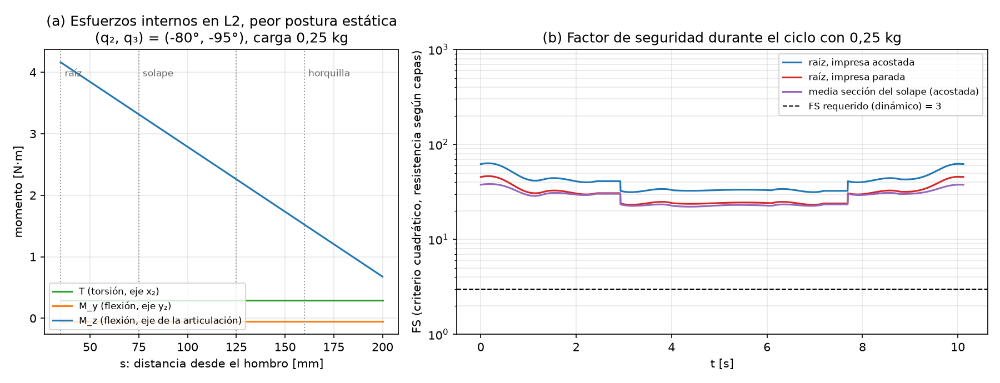
Figura 3. Esfuerzos internos y FS
Caso
Raíz, acostado
Raíz, parado
Solape (media sección, acostado)
Requerido
C1 ciclo con 0,25 kg
31,4
23,1
21,3
3
C2 peor postura sostenida
23,7
17,2
16,2
4
C3 colisión, motor 2 saturado
8,5
6,0
5,4
2
En el ciclo, el peor instante es t = 6,97 s (bajada a la colocación): M_z = 3,05 N·m, σ = 1,3 MPa.
Imprimirlo parado le quita un 26–29 % al FS: la flexión carga la adhesión entre capas. Con 0,25 kg
todavía cumple, pero no entra en la impresora y deja los agujeros horizontales. Queda descartado.
Concentración de tensiones (no la modela una viga): en el encuentro de la viga con el cubo del
hombro y en el extremo del solape se indican redondeos de R ≥ 5 mm. Aun con K_t = 2, el caso
accidental sigue con FS ≥ 2,7.
Conclusión: con las paredes indicadas la resistencia sobra. Lo que gobierna el diseño son la
rigidez y la unión.
4.B.5 Unión de las dos mitades
Solape a media altura en z₂ (cada mitad conserva 22 mm), de s = 65 a 115 mm. Termina antes de la base de
la horquilla (s = 120 mm), para que la mitad del hombro no se lleve un pedazo de 90 mm de ancho. Lleva
2 tornillos M4 × 50 clase 8.8 pasantes en z₂, en s = 75 y 105 mm (p = 30 mm, 10 mm al borde), con tuerca
y arandela ancha DIN 9021. Los agujeros quedan verticales en la impresión. Área de contacto: 19,5 cm².
En el solape se usa un modificador de relleno 100 % y 6 perímetros alrededor de cada agujero.
Fuerzas por tornillo:
en el plano del solape: la cupla M_z/p más N y V_y;
fuera del plano (tracción por palanca): M_y/p, T/b y V_z.
Caso
Corte por tornillo
FS tornillo (EN 1993‑1‑8)
Aplastamiento del PLA
FS
Desgarro hacia el borde (e = 10 mm)
FS
C1 ciclo
83 N
41
0,9 MPa
47
0,19 MPa
136
C2 sostenida
116 N
29
1,3 MPa
34
0,26 MPa
97
C3 colisión
503 N
6,7
5,7 MPa
7,8
1,1 MPa
22
El problema no es la resistencia sino el deslizamiento. Con una precarga de ≈ 1 kN por tornillo
(≈ 0,8 N·m de apriete; más ajuste aplasta el PLA) y μ = 0,3, la fricción toma 300 N por tornillo:
En el ciclo (83 N) no desliza.
En una colisión (503 N) sí.
El PLA pierde precarga con el tiempo por fluencia lenta.
Si las mitades se apoyan sobre el juego de un agujero impreso (0,2 mm), el tramo superior gira
0,2/30 = 6,7 mrad. Eso son hasta 2,2 mm en el TCP, más del doble de R‑B‑4 (1 mm).
Decisión: agregar 2 pasadores de acero Ø4 h8 × 40 en s = 90 mm, y₂ = ±12 mm, en agujeros impresos
a Ø3,8 y escariados a Ø4 H7. Los pasadores ubican las mitades sin juego; los tornillos solo aprietan. El
corte de colisión (≈ 500 N por elemento) es chico para un pasador de acero Ø4 (sección 12,6 mm²: aguanta
varios kN).
4.B.6 Deformación
Se integran la curvatura de flexión M/(E·I), en y₂ y en z₂, y el giro por torsión T/(G·J) a lo largo de
L2, por tramos (viga, base de la horquilla, orejas), y se los traslada al TCP. El solape se toma como
continuo, porque los pasadores lo hacen trabajar así.
Postura
Desplazamiento del TCP por L2 (solo paredes)
Con relleno (cota)
Toma, sin pieza
0,26 mm
0,22 mm
Colocación con la pieza de 0,10 kg
0,30 mm
0,25 mm
Colocación con 0,25 kg
0,37 mm
0,30 mm
Peor postura C2 con 0,25 kg
0,78 mm
0,62 mm
Los encoders de los motores no ven esta deformación. En la colocación se suma al error del
control: 0,46 mm con el par calculado + integral (§7.A). Total ≈ 0,76 mm < 1 mm (R‑B‑4), pero el margen
es chico y faltan las demás contribuciones: L1, L3, L4, rigidez y juego de los reductores impresos.
La deformación por gravedad se repite en una postura y con una carga dadas. Por eso conviene
enseñar el punto de colocación (medirlo con el robot armado y corregirlo) en vez de confiar en la
cinemática nominal. Esto se recomienda en el informe si se construye.
Se mantienen las paredes indicadas aunque la resistencia sobre: con menos perímetros bajaría la masa,
pero la deformación crecería casi en proporción a la pared que se saca, porque la rigidez sale casi
toda de las paredes. La rigidez, no la resistencia, es el criterio que manda.
4.B.7 Hipótesis y limitaciones
Viga de Euler–Bernoulli de pared delgada, con secciones planas. Corte por torsión con Bredt y corte
por fuerza transversal con un promedio sobre el alma × 1,5.
Material homogéneo por pared, con resistencia según la dirección de las capas. Los valores vienen de
la bibliografía con 20 % de descuento: conviene confirmarlos con 3 probetas planas y 3 paradas
del mismo filamento.
Se desprecian la masa del cubo del hombro (≈ 0,1 kg junto a S) y, en el cálculo desde el codo, el motor
M3. Las dos estimaciones se envuelven.
La compresión de la correa del eje 3 se estima con una polea de 30 mm de radio, porque la transmisión
todavía no está detallada.
No se modelan las concentraciones de tensión (de ahí los redondeos indicados), la fatiga ni la
temperatura (el PLA se ablanda por encima de ≈ 55 °C: no dejar el brazo al sol ni junto a fuentes de
calor).
Una simulación por elementos finitos (Fusion → Simulation → Static Stress, material ortótropo) sería
un buen contraste del K_t en el encuentro cubo–viga. No hace falta para concluir, porque los FS
tienen margen de sobra.
4.B.8 Plan de impresión preliminar
Medidas de los STL actuales (mm). Criterio de orientación: que la tensión principal quede en el plano de
la capa y que los agujeros de ejes queden verticales.
Pieza
Envolvente
Orientación (dirección de construcción)
Notas
L0 base
150 × 150 × 80
z₀ (apoyada en la base)
La torsión del eje 1 hace corte entre capas: 0,14 MPa, sin problema
L1 hombro
130 × 130 × 145
z₀
Agujeros del eje 2 horizontales → forma de lágrima
L2a brazo, hombro (L2_brazo_a.3mf)
70 × 150 × 44
z₂ (acostado), apoyada en su cara z₂ = −22 mm
Sin soportes. Solape 100 % de relleno; R ≥ 5 mm en la raíz
L2b brazo, codo (L2_brazo_b.3mf)
64 × 167 × 90
z₂ (acostado), dada vuelta: apoyada en la oreja z₂ = +45 mm, con la cara de contacto del solape hacia arriba (sale lisa)
Soporte (≈ 58 cm²) bajo el solape y entre las orejas de la horquilla
L3 codo
100 × 50 × 60
eje 3 vertical
—
L4 antebrazo
148 × 64 × 50
eje 5 vertical
Cilindro horizontal: soportes o base plana de 45°
L5 muñeca
36 × 36 × 36
eje 5 vertical
—
L6 brida y pinza
108 × 80 × 40
z₀ (dedos acostados)
La flexión de los dedos queda en el plano de la capa
Parámetros comunes: PLA, 210 °C / cama 60 °C, capa 0,2 mm, 4 perímetros, 6 capas sólidas, giroide 30 %,
brim en las piezas altas. Agujeros de paso M4 impresos a Ø4,4. Agujeros de pasadores impresos a Ø3,8 y
escariados.
División en el CAD. La define parametros.json (eslabón L2_brazo, bloque division). La aplica el
script de Fusion, que hace los agujeros y crea los cuerpos estructura_a y estructura_b.
brazo/python/division_L2.py aplica la misma operación sobre la malla y comprueba:
que las mitades sean estancas y no se superpongan (volumen a + b = volumen de la unión = 608,9 cm³);
que cada una entre en la cama;
cuánta superficie necesita soporte.
Por los agujeros, la masa de la estructura de L2 baja 0,4 % (0,489 → 0,487 kg). Es despreciable para la
dinámica y el control, así que no se volvieron a correr.
Eryildiz, M. (2021). Effect of build orientation on mechanical behaviour and build time of FDM
3D‑printed PLA parts: an experimental investigation. European Mechanical Science 5(3):116–120.
doi:10.26701/ems.881254
Chacón, J. M. et al. (2017). Additive manufacturing of PLA structures using fused deposition modelling:
effect of process parameters on mechanical properties and their optimal selection. Materials & Design
124:143–157. doi:10.1016/j.matdes.2017.03.065
EN 1993‑1‑8 (Eurocódigo 3): resistencia de tornillos a corte y tracción.
4.C Fabricación, componentes y montaje del brazo
4.C.1 Propuesta de impresión
La orientación y los parámetros de cada pieza están en la tabla de la sección 4.B.8. Todos se rigen por un
mismo criterio: la tensión principal en el plano de la capa y los agujeros de ejes verticales.
Parámetros comunes, que también están en parametros.json, en brazo.material.impresion: PLA, boquilla
0,4 mm, capas de 0,2 mm, 4 perímetros, 6 capas sólidas y relleno giroide del 30 %.
Material total. Con la densidad efectiva de 800 kg/m³, la estructura impresa pesa unos 3,2 kg. La
base L0, de 1,13 kg, se puede vaciar sin problema porque solo trabaja a compresión y torsión. Con soportes
y desperdicio, hacen falta unos 3,5 kg de filamento (estimado).
Probeta de calibración. Antes de las piezas finales se imprime una probeta con:
un agujero Ø4,4 (tornillo), uno Ø3,8 (pasador, para escariar) y uno de Ø22 (asiento de rodamiento 608);
un tramo de pared de 4 perímetros;
probetas de tracción planas y paradas.
Sirve para ajustar la compensación de agujeros del laminador y verificar la densidad efectiva (pesándola)
y las resistencias del material (sección 4.B.7).
4.C.2 Tolerancias de encastres y uniones
Una impresora FDM típica da ±0,1–0,2 mm, y los agujeros salen ≈ 0,1–0,2 mm más chicos que en el modelo
porque el filamento se aplasta hacia adentro del contorno.
Unión
Medida en el CAD
Ajuste buscado
Justificación
Agujero de paso para M4
Ø4,4
Juego de 0,2–0,4 mm
Montaje sin forzar; el corte no pasa por los tornillos (los pasadores ubican)
Pasador Ø4 h8
Agujero impreso Ø3,8, escariado a Ø4 H7
Ajuste sin juego
Elimina el deslizamiento de la unión de L2: el juego daría 2,2 mm en el TCP (4.B.5)
Asiento de rodamiento 608 (Ø22)
Ø22,0 + compensación de la probeta
Leve interferencia (0–0,05 mm)
Que el rodamiento no gire en el asiento; se monta a presión con prensa
Eje en el rodamiento (Ø8)
Eje de acero rectificado
h6 en el rodamiento
Lo fija el componente comercial
Agujeros horizontales
Forma de lágrima con punta a 45°
—
Imprimir sin soportes y conservar el diámetro útil
Solape de L2
Caras planas de contacto
Planitud de la capa superior
La cara de contacto de L2b se imprime arriba para que salga lisa
4.C.3 Lista de componentes
Estimación de orden de magnitud con precios de referencia de tiendas en línea, en USD. No es una
cotización: hay que actualizarla con proveedores locales.
Tabla 6. Lista de componentes del brazo
Componente
Cant.
Tipo
Precio unit. est. [USD]
Subtotal [USD]
Filamento PLA, 1 kg
4
impreso
20
80
Motor NEMA 17 de 48 mm (ejes 1–3)
3
comercial
12
36
Motor NEMA 14 de 28 mm (ejes 4–5)
2
comercial
12
24
Micro motor paso a paso (eje 6)
1
comercial
10
10
Driver de lazo cerrado con encoder (por motor)
6
comercial
20
120
Micro servo de 15 g (pinza)
1
comercial
3
3
Rodamientos 608 y de brida de diámetro grande para los reductores
Fuente de 24 V y 5 A, cables, borneras y parada de emergencia
1 juego
comercial
35
35
Total estimado
≈ 370
Las piezas impresas son L0, L1, L2a, L2b, L3, L4, L5 y L6, más los dedos y los engranajes de los
reductores.
El costo está dominado por los drivers de lazo cerrado, que exige la hipótesis de control por par. Con
drivers de paso comunes (≈ USD 3 c/u), el total baja a unos USD 270, pero el control queda limitado a
posición.
4.C.4 Secuencia de montaje
Reductores. Montar los reductores impresos con sus motores y rodamientos y probarlos en banco:
juego, rozamiento y sentido.
Base (L0). Fijar la base al pedestal. Colocar M1 y el reductor del eje 1 con el rodamiento de la
torreta.
Hombro (L1). Montar L1 sobre la salida del eje 1. Colocar M2 y su reductor en la oreja derecha del
hombro.
Brazo, mitad del hombro (L2a). Insertar el cubo de L2a en la horquilla del hombro, con el eje
pasante y los rodamientos. Acoplarlo a la salida del reductor 2.
Brazo, mitad del codo (L2b). Presentarla sobre el solape, colocar los 2 pasadores golpeando
suave y después los 2 tornillos M4 con arandelas anchas. Apretar a ≈ 0,8 N·m: más apriete aplasta el PLA.
Motor del codo (M3). Montarlo sobre L2a, con la correa GT2 hasta la polea del codo. Tensar la correa.
Codo (L3). Montar L3 en la horquilla del codo con su eje y rodamientos. Colocar M4 detrás del codo.
Antebrazo (L4). Montarlo sobre la salida del eje 4. Colocar M5 y su correa.
Muñeca (L5 y M6). Montar la muñeca en la horquilla del antebrazo y colocar M6.
Brida y pinza (L6). Montar la brida, los dedos y el servo de la pinza.
Cableado. Pasar los cables por el exterior de los eslabones, con espiral y sujeción en cada
articulación. Dejar un rulo de servicio para el giro de cada eje: ±170° en el eje 1 y ±180° en los ejes
4 y 6.
Puesta a cero. Llevar el brazo a la pose cero (vertical, antebrazo horizontal) con una escuadra,
fijar el cero de cada encoder y comprobar los sentidos contra la tabla DH.
Accesibilidad e interferencias.
Los tornillos de la unión de L2 se ajustan desde las dos caras laterales, que quedan libres en todo el
rango del eje 2.
Las holguras con el plano de apoyo a lo largo del ciclo están en la sección 6.A.2.
Pendiente: la revisión de interferencias en poses extremas con Inspeccionar → Interferencia de
Fusion, y el detalle de alojamientos de rodamientos y canales de cables. La geometría actual es
simplificada.
4.D Relevamiento del kit OSOYOO y representación del AGV
4.D.1 Datos del kit
Versión identificada: OSOYOO «M2.0 Metal Mecanum» para Arduino Mega 2560. Cada dato se clasifica en:
D documentado: manual u hoja de datos;
M medido;
C calculado;
E estimado.
Los valores se relevaron en el laboratorio el 07/11 y el 11/11/2026 (secciones 5.C.4 y 8.B) y están en
parametros.json, en el bloque agv.
Tabla 7. Parámetros del AGV y su procedencia
Dato
Valor
Clase
Fuente / método
Ancho total exterior
245 mm
D
Manual M2.0, p. 1
Placa del chasis
200 × 155 mm
D
Manual M2.0, p. 1
Rueda mecanum
Ø80 × 36 mm, rodillos a 45°
D
Manual M2.0, p. 1
Semitrocha l_y
100 mm (±10)
M
App de medición del celular, centro a centro (2l_y = 20 cm). Antes: 107,6 mm estimado
Semidistancia entre ejes l_x
50 mm (±10)
M
Ídem (2l_x = 10 cm). Antes: 62,2 mm estimado
Radio efectivo r
40 mm (avance real/odometría 1,029)
D + M
Manual; la calibración en el piso da el radio efectivo en avance
Patrón de rodillos
X
M
Verificado: el lateral y el giro salen con el signo esperado (GEO … 1)
Motorreductor
GM25‑370, 9 V, encoder Hall de 11 PPR
D
Hoja de datos del motor
Reducción efectiva
~33,7:1 (la ficha dice 75:1)
C
1482 cuentas / (11 × 4)
Cuentas por vuelta de rueda
1482 (×4)
M
5 vueltas a mano por rueda: FL 1481, FR 1467, RL 1489, RR 1493
K y zona muerta por rueda
0,117–0,130 rad/s/PWM; 47–75 PWM elevado, 66–104 en el piso
M
Escalones de PWM (5.C.4)
Driver
«Model Y» v2.0, 2 × TB6612
D
Manual V2, p. 4
Alimentación
2 × 18650 en serie, 7,0–7,4 V en los ensayos
D + M
Lista de partes; tester
Comunicación
USB y WiFi (ESP8266 del shield, UDP)
M
Latencia mediana 51 ms (7.C.2)
Masa
1,5 kg
E
No se pesó: dato del proyecto de referencia del mismo kit
Inercia I_z
0,017 kg·m²
C
Placa de 0,9 kg más 4 conjuntos rueda‑motor de 0,15 kg en (±l_x, ±l_y)
Sensores auxiliares. El kit trae sensor de línea de 5 canales (A0–A4) y ultrasonido con servo. No se
usan: la aplicación no tiene una línea que seguir ni obstáculos en el recorrido A→B. El sensor de línea
sería útil para la aproximación final a B, como referencia externa que corrija la odometría (sección
9.5).
Conexionado.
Encoders. No vienen conectados de fábrica. Se propone llevar los 8 canales Hall a A8–A15 (puerto K de
la Mega), que comparten una sola interrupción por cambio de pin (PCINT2). Así se decodifican en
cuadratura ×4 sin ocupar las interrupciones externas.
Motores. Mantienen el cableado del manual (p. 10).
Tabla 8. Conexionado del AGV a la Arduino Mega
Rueda
PWM
IN1 / IN2
Encoder A / B
FL delantera izquierda
D10
D26 / D28
A9 / A13
FR delantera derecha
D9
D22 / D24
A8 / A12
RL trasera izquierda
D12
D7 / D8
A11 / A15
RR trasera derecha
D11
D5 / D6
A10 / A14
4.D.2 Representación del AGV
Representación geométrica. Se usa la del entorno gráfico (coppelia/construir_escena.py). Está
construida con las medidas de parametros.json:
placas de 200 × 155 mm a 55 y 90 mm de altura, con la superior como bandeja;
ruedas de Ø80 × 36 mm en (±l_x, ±l_y);
motores, columnas y la placa Mega en sus ubicaciones relativas.
Coherencia. El marco {AGV} de esa representación, con origen en el centro geométrico, es el mismo del
modelo cinemático (5.C) y del firmware.
Medidas nuevas. La escena se armó el 07/11 con l_x y l_y estimados (62,2 y 107,6 mm). Con los medidos
(50 y 100 mm) se regenera con coppelia/construir_escena.py, que los lee del JSON.
Pendiente: un CAD editable del AGV en Fusion con las medidas relevadas. La representación actual
alcanza para el entorno gráfico y para la ubicación de componentes, pero no es un CAD de piezas.
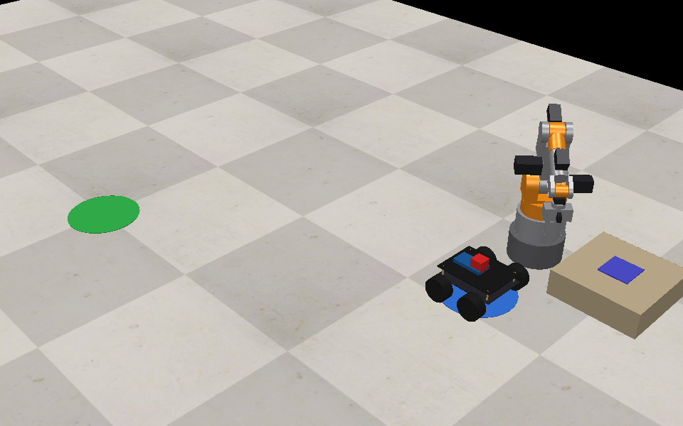
Figura 4. Representación del AGV en la escena (llegada a B con la pieza)
5. Modelos
5.A Modelo cinemático del brazo 6R
Fuente de datos: parametros/parametros.json. Código: brazo/octave/ (mcd_brazo.m, mci_brazo.m,
jacobiano_brazo.m). Verificación reproducible: verificar_cinematica.m, cuyo registro queda en
brazo/resultados/verificacion_cinematica.txt.
Convenciones: SI y radianes; DH estándar ⁱ⁻¹Aᵢ = Rz(θᵢ)·Tz(dᵢ)·Tx(aᵢ)·Rx(αᵢ), con θᵢ = qᵢ + offsetᵢ
[Barrientos et al., 2007, §4.1]. Giros positivos según la regla de la mano derecha sobre zᵢ₋₁.
5.A.1 Tramas y tabla de Denavit–Hartenberg
La trama {0} está en la intersección del eje 1 con el plano de apoyo de la base, con z₀ vertical hacia arriba
y x₀ hacia la estación de toma. En la pose cero (q = 0) el brazo queda vertical y el antebrazo y la
herramienta horizontales hacia +x₀. Es la pose en la que se dibuja el CAD.
Tabla 9. Parámetros de Denavit–Hartenberg (estándar) del brazo
i
θᵢ
dᵢ [m]
aᵢ [m]
αᵢ
Eje zᵢ₋₁ en la pose cero
1
q₁
0,18
0
−90°
+z₀ (giro de la base)
2
q₂ − 90°
0
0,20
0
+y₀ (hombro)
3
q₃
0
0
−90°
+y₀ (codo)
4
q₄
0,20
0
+90°
+x₀ (giro del antebrazo)
5
q₅
0
0
−90°
+y₀ (cabeceo de la muñeca)
6
q₆
0,05
0
0
+x₀ (giro de la brida)
TCP
—
0,08 sobre z₆
—
—
—
El offset de −90° en θ₂ es el desfasaje entre el cero del motor (brazo vertical) y el cero que resulta de
asignar las tramas. Se carga como offset del eje.
a₁ = a₃ = 0 simplifica el KUKA KR 6 R700, que tiene 25 y 35 mm. Gracias a eso los ejes 4, 5 y 6 se cortan
en el centro de muñeca W y el brazo cumple la condición de muñeca esférica.
Sentidos positivos en la pose cero: q₂ > 0 inclina el brazo hacia adelante y q₃ > 0 baja el antebrazo.
5.A.2 Cinemática directa
⁰T_TCP = ⁰A₁ ¹A₂ ²A₃ ³A₄ ⁴A₅ ⁵A₆ · Tz(0,08). La posición del centro de muñeca en el plano vertical del brazo es
ρ = a₂ sin q₂ + d₄ cos(q₂+q₃), z_W = d₁ + a₂ cos q₂ − d₄ sin(q₂+q₃), W = (ρ cos q₁, ρ sin q₁, z_W).
Comprobación en configuraciones conocidas (error < 10⁻¹⁶ m en todas):
Centro de muñeca: p_W = p − (d₆ + h)·a, con a = tercera columna de R y h = 0,08 m.
Eje 1: q₁ = atan2(p_Wy, p_Wx) (hombro adelante, ρ = +r) o q₁ + π (hombro atrás, ρ = −r), con
r = √(p_Wx² + p_Wy²) y s = p_Wz − d₁.
Ejes 2 y 3, por el teorema del coseno en el triángulo hombro–codo–muñeca:
ρ² + s² = a₂² + d₄² − 2a₂d₄ sin q₃ ⇒ sin q₃ = (a₂² + d₄² − ρ² − s²)/(2a₂d₄);
q₃ = atan2(sin q₃, ±√(1 − sin²q₃)): el signo + es codo arriba.
q₂ = atan2(k₁ρ − k₂s, k₂ρ + k₁s), con k₁ = a₂ − d₄ sin q₃ y k₂ = d₄ cos q₃.
Muñeca: ³R₆ = (⁰R₃)ᵀ R. Por la estructura de ³R₆:
³R₆(:,3) = (−c₄s₅, −s₄s₅, c₅)ᵀ y ³R₆(3,1:2) = (s₅c₆, −s₅s₆), de donde
q₅ = atan2(±√(r₁₃² + r₂₃²), r₃₃), q₄ = atan2(−r₂₃/s₅, −r₁₃/s₅), q₆ = atan2(−r₃₂/s₅, r₃₁/s₅).
Se obtienen 2 (hombro) × 2 (codo) × 2 (muñeca) = 8 soluciones. Siempre se usa atan2 para resolver el cuadrante.
Selección y continuidad. Cada solución se lleva al equivalente módulo 2π más cercano a la configuración
actual y se descartan las que salen de los límites. Entre las válidas se elige la de menor distancia
ponderada a la configuración actual. Así no hay saltos de rama a lo largo de una trayectoria.
Singularidades resueltas por convención. Si r = 0, q₁ toma el valor actual. Si sin q₅ = 0, q₄ toma el valor
actual y q₆ se despeja de la suma (o la diferencia) q₄ ± q₆.
Verificación (2000 poses aleatorias dentro de los límites):
error máximo ‖MCD(MCI(T)) − T‖ = 1,1·10⁻¹³;
la configuración original aparece entre las 8 soluciones en el 100 % de los casos.
5.A.4 Jacobiano y singularidades
Jacobiano geométrico del TCP en {0}, con todas las articulaciones rotacionales:
Jᵢ = [ zᵢ₋₁ × (p_TCP − oᵢ₋₁) ; zᵢ₋₁ ]. Es la forma matricial de la propagación de velocidades base →
herramienta (Tema III).
Verificación: la diferencia con la derivada numérica de la MCD (diferencias centrales, 200 poses) es 3,2·10⁻¹⁰.
Determinante: det J = −a₂ d₄ · ρ · cos q₃ · sin q₅. Ajusta en 200 poses con un desvío de 10⁻¹⁴.
Hay tres singularidades:
Factor nulo
Singularidad
Interpretación física
ρ = 0
de hombro (interior)
El centro de muñeca está sobre el eje 1; girar la base no lo mueve
cos q₃ = 0
de codo (frontera)
Brazo totalmente estirado (alcance máximo) o plegado sobre sí mismo
sin q₅ = 0
de muñeca (interior)
Los ejes 4 y 6 quedan alineados y hacen lo mismo
5.A.5 Poses de la tarea
Herramienta hacia abajo, R_toma = diag(1, −1, −1). Los dedos cierran según y₀. La colocación está girada
90° alrededor de z₀.
Tabla 10. Poses de la tarea y distancia a las singularidades
Pose
p [m]
q [°]
ρ [m]
cos q₃
sin q₅
Aproximación de la toma
(0,30; 0; 0,10)
(0; 40,0; −9,0; 0; 59,0; 0)
0,300
0,988
0,857
Toma
(0,30; 0; 0,02)
(0; 54,6; −7,8; 0; 43,2; 0)
0,300
0,991
0,685
Aproximación de la colocación
(0; 0,30; 0,10)
(90; 40,0; −9,0; 0; 59,0; 0)
0,300
0,988
0,857
Colocación
(0; 0,30; 0,02)
(90; 54,6; −7,8; 0; 43,2; 0)
0,300
0,991
0,685
Las cuatro poses están lejos de las tres singularidades y usan la configuración hombro adelante, codo arriba y
muñeca +. En el descenso cartesiano de 80 mm (100 muestras) el mayor cambio articular entre muestras es
0,18°: la solución es continua.
Jacobiano inverso. Para bajar a 0,05 m/s sin girar la herramienta, en la toma hacen falta
q̇ = (0; 10,5; −2,2; 0; −8,4; 0) °/s.
5.A.6 Relación estática entre fuerzas en la herramienta y pares articulares
Por igualdad de potencias, Fᵀ ẋ = τᵀ q̇ ⇒ τ = Jᵀ F (Tema III). Con la convención de la cátedra
(F_ext = fuerza del ambiente sobre el robot), el par motor de sostén es τ = g(q) − Jᵀ F_ext.
Caso de carga de la tarea, en la pose de colocación y solo con cargas externas (el peso propio entra en el
modelo dinámico):
Carga en el TCP
τ_motor [N·m] (ejes 1…6)
Peso de la pieza, 0,1 kg
(0; −0,294; −0,134; 0; 0; 0)
Peso + reacción de inserción de 5 N hacia arriba
(0; +1,206; +0,550; 0; 0; 0)
Signo: el peso adelante del hombro tiende a inclinar el brazo hacia adelante (q₂ creciente), así que el motor
aplica par negativo: 0,30 m · 0,981 N = 0,294 N·m ✓.
Se comprobó la igualdad Fᵀ(J q̇) = (JᵀF)ᵀ q̇ (diferencia 3,5·10⁻¹⁷).
5.B Modelo dinámico y dimensionamiento del brazo 6R
Código: brazo/octave/ (modelo_dinamico_brazo.m, rne_brazo.m, lagrange_brazo.m,
matrices_dinamicas.m, dinamica_directa.m, energia_brazo.m).
Verificación: verificar_dinamica.m y dimensionamiento.m. Los registros quedan en brazo/resultados/.
Referencias: Barrientos et al. (2007), cap. 5 (§5.2 Lagrange, §5.3 Newton–Euler, §5.6 actuadores);
apunte de cátedra Tema III.
M incluye la inercia de los eslabones, la de la pieza y la de los rotores reflejada a la junta,
N²J_m, sobre la diagonal. Se modela la transmisión como rígida (§3.15 del apunte).
c reúne los términos de Coriolis y centrífugos.
g es el par de sostén gravitatorio, con g₀ = (0, 0, −9,81) m/s².
τ_f = b q̇ + τ_C sgn(q̇) es la fricción del lado articular, con valores estimados en el JSON. En la
simulación sgn se suaviza con tanh(q̇/10⁻³).
F_ext es la acción del ambiente sobre el robot en el TCP (convención de la cátedra).
Implementación principal: Newton–Euler recursivo con todos los vectores en {0} (apunte §3.10).
Pasada hacia la punta: ωᵢ, αᵢ y las aceleraciones de los centros de masa.
Fuerzas propias de cada eslabón: Fᵢ = mᵢ(a_ci − g₀) y Nᵢ = Iᵢαᵢ + ωᵢ × Iᵢωᵢ.
Pasada hacia la base: fᵢ y nᵢ, con condición de borde f₇ = −F_ext en el TCP.
Par de cada junta: τᵢ = zᵢ₋₁ᵀ nᵢ.
M, c y g se obtienen evaluando Newton–Euler con q̇ y q̈ nulos o unitarios (método de Walker–Orin). La dinámica
directa resuelve M q̈ = τ − (c + g + τ_f − JᵀF_ext) sin invertir M.
Contraste independiente: Lagrange.
M = Σ_k [m_k J_vkᵀ J_vk + J_ωkᵀ I_k J_ωk] + diag(N²J_m), con los jacobianos de los centros de masa.
g = −Σ_k m_k J_vkᵀ g₀.
c_i = Σ_j Ṁ_ij q̇_j − ½ q̇ᵀ(∂M/∂q_i)q̇, con las derivadas de M por diferencias centrales.
5.B.2 Masas e inercias
Estructura impresa: a partir del STL que exporta Fusion. El sólido se descompone en tetraedros desde el
origen y se suman volumen, primer y segundo momento. Luego se aplica Steiner al centro de masa y se rota el
tensor a la trama DH de cada eslabón: ⁱI_c = R₀ᵢᵀ ⁰I_c R₀ᵢ.
Densidad efectiva del PLA: 800 kg/m³ [estimado]. Supone 4 perímetros y 30 % de relleno; se verifica
pesando una probeta impresa.
Motores: prismas macizos con la masa del JSON, ubicados en las envolventes del CAD.
Prueba del algoritmo con el cubo de la pieza: volumen e Ixx exactos.
Contraste con Fusion (estructura): los volúmenes coinciden con un error ≤ 0,08 % y los centros de masa
dentro de 0,01 mm. La diferencia viene de la teselación del STL.
Tabla 11. Parámetros inerciales de los eslabones (estructura con densidad efectiva más motores)
Eslabón
m [kg]
de la cual estructura [kg]
r_c en trama i [mm]
diag(I_c) [kg·cm²]
L1 hombro
1,538
1,058
(0; 29,1; 32,8)
(78,1; 64,8; 32,3)
L2 brazo (dos mitades)
0,967
0,487
(−115,6; 0; −30,8)
(16,2; 45,7; 32,9)
L3 codo
0,369
0,169
(0; 0; −23,6)
(8,1; 8,2; 1,0)
L4 antebrazo
0,361
0,181
(21,2; −73,5; 0)
(3,9; 2,8; 5,3)
L5 muñeca
0,089
0,029
(0; 0; 18,5)
(0,26; 0,26; 0,15)
L6 brida + pinza
0,147
0,132
(3,2; 0; 23,1)
(1,31; 0,94; 0,95)
Pieza (en el TCP)
0,100
—
(0; 0; 80) en trama 6
m a²/6 = 0,27
La masa móvil total es de 3,47 kg y los motores representan más de la mitad.
5.B.3 Comprobaciones
Comprobación
Resultado
Newton–Euler vs Lagrange (50 estados aleatorios, pieza de 0,25 kg)
E₀ = 7,35 J; error de energía 8·10⁻⁶ J con h = 2 ms y 5·10⁻⁷ J con h = 1 ms. Al reducir h el error baja unas 15 veces, lo esperable para un método de cuarto orden
En la toma, g = (0; −2,83; −0,63; 0; −0,005; 0) N·m sin pieza y g₂ = −3,12 N·m con la pieza. g₅ no cambia porque la herramienta está vertical y el peso de la pieza pasa por el eje 5 ✓
5.B.4 Accionamientos y carga admisible
Método.
Se recorre una grilla de 14 553 posturas dentro de los límites (q₂, q₃, q₄, q₅) con la carga máxima.
Para cada junta se toma el máximo de |g_i|, que es el sostén estático más desfavorable.
Ese par se lleva al motor con τ_m = τ/(ηN) y se compara con τ_m,max/FS.
FS = 1,5 cubre los pares de aceleración, que se verifican con las trayectorias, y la caída de par del paso a
paso con la velocidad.
Resultado con la reducción elegida:
Tabla 12. Dimensionamiento estático de los accionamientos (carga 0,25 kg, FS = 1,5)
Junta
máx |g| [N·m]
Postura crítica
N
τ_m requerido [N·m]
τ_m,max [N·m]
Uso con FS
2
4,95
Brazo estirado horizontal
30
0,206
0,45 (NEMA 17)
69 %
3
1,76
Antebrazo horizontal
15
0,147
0,45
49 %
4
0,52
Muñeca a 90° con el antebrazo horizontal
10
0,061
0,12 (NEMA 14)
76 %
5
0,44
Herramienta horizontal
10
0,052
0,12
65 %
6
0,005
—
5
0,001
0,05
3 %
1
—
La gravedad no genera par en un eje vertical
20
—
—
Lo fija la aceleración (ver trayectorias)
Pregunta de investigación: efecto de la reducción en el eje más exigido.
Con N₂ = 20, el eje 2 quedaba al 103 % y la carga admisible en todo el espacio articular era 0,221 kg, menor
que los 0,25 kg pedidos (R‑B‑3).
Con N₂ = 30, el uso baja al 69 % y la carga admisible sube a 0,379 kg. El límite pasa al eje 4.
El costo es que el motor 2 gira más rápido (450 rpm a 90 °/s) y la inercia reflejada aumenta 2,25 veces
(N²J_m = 0,0049 kg·m²).
La comparación dinámica a lo largo de la trayectoria completa queda pendiente.
Carga admisible declarada:
0,25 kg en todo el espacio articular. Es el requisito R‑B‑3 y queda con margen frente a los 0,379 kg
del criterio estático.
En las poses de la tarea, con la pieza de 0,1 kg, el motor más exigido (eje 2) trabaja al 43 % con FS.
Queda sin verificar hasta tener las trayectorias: los picos de par en movimiento y el par del eje 1.
5.C AGV OSOYOO: modelo cinemático, dinámico y del accionamiento
Código: agv/octave/ (agv_parametros.m, verificar_cinematica_agv.m, simular_agv.m,
ajustar_escalones.m, identificacion_simulada.m, identificar_lab.m, ensayos_agv.m), firmware
agv/firmware/agv_osoyoo/ (mismo algoritmo de control) y figuras agv/python/figuras_agv.py.
Referencias: Lynch y Park, Modern Robotics §13.2 (mecanum) y §13.4 (odometría); apuntes Tema V (PI,
antiwindup) y Tema VI (odometría, saturación con escala común); hoja de datos GM25-370.
El modelo es de simulación, pero desde el 11/11/2026 sus parámetros principales son medidos en el kit
(marcados M): geometría, cuentas por vuelta, K y zona muerta de cada motor y deslizamiento. Quedan como
estimados (E) la masa, las inercias y la constante de tiempo.
5.C.1 Convenciones y cinemática omnidireccional
Marcos.
Marco global {G}: el piso de la celda, con origen en la estación A.
Marco del cuerpo {B}: en el centro geométrico, x hacia adelante, y a la izquierda, giro positivo antihorario.
Pose ξ = (x, y, φ).
Ruedas. 1 = FL, 2 = FR, 3 = RL, 4 = RR. ω_i > 0 cuando la rueda rueda hacia adelante. Rodillos a 45°
en patrón X; queda a verificar en el kit, y si resultara O, el firmware invierte el eje lateral (GEO … sy).
Mapa inverso. ω = H v_b, con H = (1/r)[1 −1 −L; 1 1 L; 1 1 −L; 1 −1 L] y L = l_x + l_y.
Valores: r = 0,040 m (manual, Ø 80 mm), l_x = 0,050 m (M) y l_y = 0,100 m (M), medidos con ±1 cm
(2l_x = 10 cm, 2l_y = 20 cm). L = 0,150 m; el grupo de G. Buffa midió en el mismo kit 0,1525 m.
Mapa directo. v_b = H⁺ω, con H⁺ = (HᵀH)⁻¹Hᵀ.
Verificaciones (verificar_cinematica_agv.m):
rango(H) = 3 y H⁺H = I (error 2·10⁻¹⁶);
compatibilidad de las órdenes de rueda: el espacio nulo de Hᵀ es n = (−1, −1, 1, 1), con las
delanteras "peleando" contra las traseras. Una orden ω es realizable sin deslizar solo si nᵀω = 0. Por
ejemplo, ω = (5, 5, 5, 0) deja un residuo de ±1,25 rad/s que los rodillos absorben deslizando;
casos:
avance: las 4 ruedas iguales;
lateral +y: FL y RR hacia atrás, FR y RL hacia adelante;
diagonal: FL y RR quietas;
giro antihorario: las izquierdas hacia atrás.
Límites de rueda → conjunto admisible del cuerpo. |v_x| + |v_y| + L|ω| ≤ r·ω_máx (un octaedro).
El motor daría ω = K(255 − u_dz) ≈ 22 rad/s en el piso a 7,3 V, pero el firmware limita la rueda a
ω_máx = 10 rad/s: con PWM ≥ 200 la carga de interrupciones de los encoders estiraba el período del lazo
a 18–31 ms (falla de período medida el 11/11).
Con 10 rad/s: r·ω_máx = 0,40 m/s en avance o lateral, 0,28 m/s en diagonal y 2,7 rad/s de giro.
Una orden fuera del conjunto se escala por un factor común, lo que conserva la dirección del movimiento.
Odometría. Δ = H⁺Δφ con los incrementos de los encoders (x4, 1482 cuentas/vuelta medidas: 5 vueltas a
mano por rueda, FL 1481, FR 1467, RL 1489, RR 1493). La ficha (75:1, 11 PPR) daría 3300; el motor del kit es
otra variante, de ~33,7:1. Se integra con el
rumbo en el punto medio y se corrige con factores η_x, η_y, η_ω (real/odometría) obtenidos por calibración.
Fuentes de deriva: deslizamiento de los rodillos (distinto por dirección), radio efectivo, l_x + l_y,
cuantización y dispersión entre ruedas.
5.C.2 Modelo dinámico de la base y del accionamiento
Base. Con la restricción de rodadura ω = Hv_b, la potencia Σ τ_i ω_i = Fᵀv_b lleva los pares de rueda al
esfuerzo sobre el chasis: (F_x, F_y, M_z) = Hᵀτ. Newton–Euler plano en el cuerpo:
Con m = 1,5 kg (E), I_z = 0,017 kg·m² (C, por distribución de masas), J_rotor = 2,5 g·cm² (E) y la
reducción medida de 33,7:1: J_w = 3,4·10⁻⁴ kg·m².
La masa equivalente en traslación es 2,4 kg (m + 4J_w/r²): el rotor reflejado suma 0,86 kg, más de la
mitad de la masa del robot. Con la reducción de la ficha (75:1) habría sido 5,2 kg.
Reparto de esfuerzos. El motor i aporta τ_i y la estructura transmite Hᵀτ. La componente de τ sobre n no
produce movimiento: carga los rodillos y se pierde.
Accionamiento, nivel físico (hoja GM25-370 del lado de la rueda).
Modelo: τ_i = K_t,i(V_i − K_e ω_i)/R − b ω_i − τ_C tanh(ω_i/ε), con V_i = u_i V_bat/255.
Valores ajustados a la identificación (11/11): R = 2,0 Ω (E), K_e = 0,22 V·s/rad y K_tη = 0,09 N·m/A,
V_bat = 7,3 V y dispersión entre motores = K de cada rueda / media = (1,02; 1,01; 0,94; 1,04) (M). Los
valores iniciales de la ficha (0,55 y 0,21, con 75:1) daban K = 0,050, 2,5 veces menos que lo medido.
Fricción de Coulomb: τ_C,reductor = 0,075 N·m y τ_C,rodadura = 0,028 N·m, que solo actúa en el piso.
Reproducen la zona muerta media medida elevado (58 PWM) y en el piso (80 PWM).
Accionamiento, nivel identificable (relación entre ambos niveles).
En régimen permanente: ω = K(u − u_dz), con K = (K_t V_bat/(255R))/(K_tK_e/R + b) = 0,124 rad/s/PWM,
u_dz = 255 τ_C R/(K_t V_bat) y τ = J_w/(K_tK_e/R + b).
Con las ruedas elevadas, u_dz = 58 y τ = 0,033 s. En el piso, u_dz = 80 porque se suma la rodadura.
La zona muerta es la fricción vista como tensión. K depende casi solo de V_bat/K_e, es decir de la
tensión de batería, que hay que registrar en cada ensayo.
Deslizamiento. El movimiento sobre el piso es diag(η_d)v_b, con η_d = (1,029; 0,805; 0,995) (M, la
calibración en el piso de la sección 8.B) y 3 % menos en el lateral por cada kg de carga (E). Los encoders
no lo ven. El modelo no incluye dos efectos medidos en el piso: el acople lateral → avance (el robot
avanza 6–18 cm al moverse 0,6 m de costado) y el giro por deslizamiento al arrancar el lateral con carga
(8–12°).
5.C.3 Identificación (método probado sobre la planta simulada)
Procedimiento.
Con el robot elevado se aplican 12 escalones de PWM, ±40…255, de 1,5 s cada uno; es el mismo guion del
laboratorio.
La velocidad de régimen se toma como la media del último 40 % de cada escalón.
K y u_dz salen de una regresión por mínimos cuadrados y τ del 63 % de la respuesta.
Se ajusta con los escalones impares y se verifica con los pares: datos distintos, como pide el enunciado.
Tabla 13. Identificación del accionamiento sobre la planta simulada (ajuste con escalones impares, verificación con pares)
Rueda
K identificado / físico [rad/s/PWM]
u_dz identificado / físico
τ identificado [s]
Error de verificación [rad/s]
FL
0,0499 / 0,0499
25,6 / 25,6
0,040
0,001
FR
0,0497 / 0,0497
26,9 / 26,9
0,050
0,001
RL
0,0501 / 0,0501
24,3 / 24,3
0,040
0,001
RR
0,0498 / 0,0497
26,4 / 26,4
0,045
0,001
Resultado. El método recupera K y u_dz.
Constante de tiempo. τ sale mayor que la mecánica (0,023 s) porque incluye el filtro de velocidad
(α = 0,5) y el muestreo de 10 ms. Es la constante que efectivamente ve el lazo.
Con el kit real, identificar_lab.m <carpeta> hace lo mismo sobre telemetria.csv y escribe las
órdenes MDL para el firmware.
5.C.4 Identificación en el kit (11/11/2026)
Condiciones. Robot elevado, batería de 7,4–7,5 V, firmware agv-0.1.2. El guion tiene escalones de
±40…160 PWM: a 255 la falla de período cortaba el ensayo.
Cambio de método. Con el ajuste impares/verificación pares, a RL le quedaba un solo escalón con la rueda
girando: su zona muerta es mayor y no gira por debajo de PWM 125. Se ajustó con todos los escalones en
régimen con la rueda girando (|ω| > 0,5 rad/s), con agv/pc/ajuste_identificacion.py. La verificación es
el residuo RMS del ajuste.
Zona muerta en el piso. Se midió aparte, en los primeros movimientos sobre el piso: es el PWM con el que
cada rueda todavía gira a ~1,5 rad/s al desacelerar. Es la que usa el firmware (orden MDL).
Tabla 14. Identificación del accionamiento en el kit real (registro agv/datos_lab/20261111-150604_s1d_identificacion_7V)
Rueda
K [rad/s/PWM]
u_dz elevado [PWM]
u_dz en el piso [PWM]
Escalones usados
RMS del ajuste [rad/s]
FL
0,1275
51
66
7
0,21
FR
0,1267
47
79
8
0,21
RL
0,1171
75
104
3
0,13
RR
0,1296
61
72
7
0,25
K es 2,5 veces la del modelo inicial (0,050), coherente con una reducción de ~34:1 y no 75:1. A PWM 160
la rueda gira a ~14 rad/s.
RL es el motor más débil: 8 % menos K y la mayor zona muerta. Es el que limita el lazo abierto.
En el piso la zona muerta sube 15–30 PWM por la rodadura, como predecía el modelo.
Lo que no se midió: la constante de tiempo (el registro a 50 Hz no resuelve los ~30 ms) y la
dependencia con la tensión de batería.
6. Trayectorias
6.A Trayectorias del brazo
Código: brazo/octave/ (quintico.m, tramo_ptp.m, tramo_lin.m, generar_ciclo_brazo.m,
verificar_trayectoria_brazo.m). Figuras: brazo/python/figuras_ciclo.py.
Resultados: brazo/resultados/verificacion_trayectoria.txt, ciclo_brazo.csv, figuras/.
Referencias: apunte de cátedra Tema IV; Barrientos et al. (2007) §§6.2–6.5.
6.A.1 Construcción de las referencias
El ciclo de la tarea encadena nueve tramos:
Tabla 15. Tramos del ciclo del brazo
#
Tramo
Tipo
Carga
T [s]
1
HOME → aproximación de la toma
PTP articular
—
1,32
2
Bajada de 80 mm a la toma
LIN, herramienta vertical
—
1,10
3
Cierre de la pinza
Espera
—
0,50
4
Subida con la pieza
LIN
0,1 kg
1,10
5
Traslado a la aproximación de la colocación (pieza girada 90°)
PTP
0,1 kg
2,06
6
Bajada a la colocación
LIN
0,1 kg
1,10
7
Apertura de la pinza
Espera
0,1 kg
0,50
8
Subida sin la pieza
LIN
—
1,10
9
Regreso a HOME
PTP
—
1,32
Ciclo completo
10,11 (R‑B‑7: ≤ 12 s ✓)
Ley temporal. Todos los tramos usan el quíntico de reposo a reposo s(u) = 10u³ − 15u⁴ + 6u⁵. Posición,
velocidad y aceleración son continuas en los empalmes con las esperas.
Tramos PTP. Interpolan las seis juntas con una duración común, fijada por la junta más restrictiva:
T ≥ máxᵢ(15|Δqᵢ|/(8Vᵢ), √(10√3|Δqᵢ|/(3Aᵢ))). Se multiplica por un margen de 1,10, se redondea hacia arriba
a un múltiplo del período de muestreo y se usa la diferencia con signo Δq = q_B − q_A.
Tramos LIN.
El TCP sigue una recta p(s) = p_A + (p_B − p_A)s.
La orientación se interpola por eje–ángulo, R(s) = R_A·Rot(n, sθ) con la fórmula de Rodrigues. Esto
conserva una rotación válida, a diferencia de promediar matrices. En el ciclo, θ = 0: la herramienta se
mantiene vertical durante la bajada y la subida (orientación especificada).
La duración mínima sale de v_cart,máx = 0,15 m/s y a_cart,máx = 0,5 m/s², con el mismo margen.
Las juntas se obtienen por MCI analítica, tomando como referencia la muestra anterior para no cambiar de
rama. Las velocidades se calculan con q̇ = J⁻¹[ṗ; ω] y las aceleraciones con q̈ = J⁻¹([p̈; α] − J̇q̇),
donde J̇ se obtiene por diferencia central en la dirección de q̇.
Si alguna junta excediera sus límites, el tramo se alarga un 5 % y se recalcula. En este ciclo no hizo falta.
Giro de 90° de la colocación. Lo resuelve el eje 1 durante el traslado: como la pieza se deja girada 90°
respecto del marco de la celda, la muñeca no necesita girar (q₄ = q₆ = 0 en todo el ciclo).
Registro de cambio. Con v_cart,máx = 0,10 m/s el ciclo duraba 12,31 s y no cumplía R‑B‑7. Se pasó a
0,15 m/s, que es el pico del quíntico a mitad del tramo; la herramienta llega a la pieza con velocidad nula.
6.A.2 Verificación de límites y geometría
Tabla 16. Uso de los límites articulares a lo largo del ciclo
Junta
Rango usado [°]
Límites [°]
máx |q̇| [°/s] (uso)
máx |q̈| [°/s²] (uso)
1
0 a 90
±170
81,7 (91 %)
148 (82 %)
2
10 a 54,6
−90 a 110
42,5 (47 %)
98,8 (55 %)
3
−9 a 20
−110 a 140
41,0 (46 %)
95,3 (53 %)
4
0
±180
0
0
5
43,2 a 60
±115
27,2 (15 %)
81,9 (23 %)
6
0
±180
0
0
Continuidad.
La derivada numérica de q coincide con q̇ hasta 8·10⁻⁵ rad/s.
El mayor salto entre muestras de 5 ms es de 0,41°, que corresponde a la velocidad pico del eje 1.
En los tramos LIN, la MCD de las referencias se aparta de la recta pedida menos de 2·10⁻¹⁶ m.
Singularidades. A lo largo del ciclo los factores de det J nunca se acercan a cero: |ρ| ≥ 0,208 m,
|cos q₃| ≥ 0,940 y |sin q₅| ≥ 0,685.
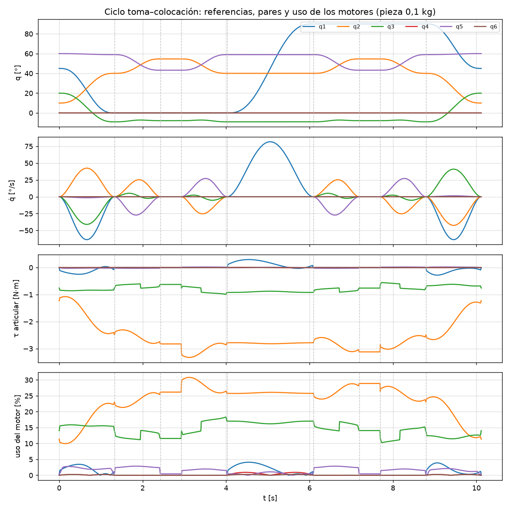
Figura 5. Referencias articulares del ciclo: posición, velocidad y aceleración de las seis juntas
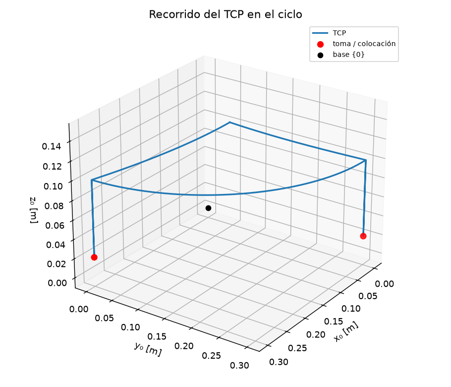
Figura 6. Recorrido del TCP en el ciclo: bajadas y subidas verticales (tramos LIN) en la toma y la colocación, y traslados articulares (PTP)
Holgura vertical sobre el plano de apoyo z₀ = 0 (descontando el radio de cada pieza): codo 0,264 m,
muñeca 0,130 m, brida 0,080 m.
Los dedos quedan a 5 mm del plano en la toma, como se diseñó: el cubo apoya en la bandeja y su centro
está a 20 mm.
No se modelaron obstáculos laterales; la celda está libre en el volumen recorrido. Queda pendiente la
comprobación de interferencias con el CAD en poses intermedias.
6.A.3 Esfuerzos a lo largo de las trayectorias
Cálculo del par articular: τ = M(q)q̈ + c(q, q̇) + g(q) + b q̇ + τ_C sgn(q̇).
Incluye la pieza en los tramos en que está en la pinza y la inercia de los rotores reflejada a la junta.
Se calcula con dinamica_rapida.m, que coincide con rne_brazo.m hasta 10⁻¹⁶ N·m.
Par de motor: τ_m = τ/(ηN).
Tabla 17. Pares articulares y de motor a lo largo del ciclo
Junta
Pico |τ| [N·m]
RMS [N·m]
Pico de sostén g [N·m]
τ_m pico [N·m]
Uso pico / RMS del motor
Velocidad máx. del motor [rpm]
1
0,296
0,116
0
0,019
4 % / 2 %
272
2
3,327
2,633
3,121
0,139
31 % / 24 %
212
3
0,988
0,789
0,920
0,082
18 % / 15 %
103
4
0,009
0,003
0
0,001
1 % / 0 %
0
5
0,029
0,018
0,005
0,003
3 % / 2 %
45
6
0,001
0
0
0
0 %
0
Lectura de los resultados:
Ejes 2 y 3. El par está dominado por el sostén gravitatorio: en el eje 2, el pico dinámico (3,33 N·m)
supera al estático (3,12 N·m) en solo un 7 %. Acortar el ciclo casi no cambia la exigencia de estos ejes
(Tema IV §4.11): la gravedad no escala con 1/T².
Eje 1. Solo ve la aceleración del brazo alrededor del eje vertical: 0,3 N·m de pico, el 4 % de un NEMA 17
con 20:1. Admite una reducción menor o un motor más chico.
Muñeca (ejes 4–6). Prácticamente no se exige en esta tarea. Su dimensionamiento lo fija la carga
admisible en posturas extremas (sección 5.B.4), no el ciclo.
Criterio de diseño. Se pedía pico ≤ 80 % y RMS ≤ 50 % del par del motor; se cumple con amplio margen. El
motor más exigido, el del eje 2, trabaja al 31 % de pico y al 24 % RMS a 212 rpm.
Saltos del par en los cambios de tramo. Vienen de la fricción de Coulomb, que cambia de signo cuando q̇
pasa por cero, y de la pieza, que se suma al inicio de la subida. El controlador tendrá que absorberlos.
6.B Trayectorias del AGV
Firmware: nucleo.cpp (nucleo_ir_a, T_min_quintico). Copia en Octave: agv/octave/simular_agv.m.
Construcción. La orden GOTO x y φ T modo genera una referencia quíntica de reposo a reposo en las tres
coordenadas de {G}, (x, y, φ), con la misma ley s(u) = 10u³ − 15u⁴ + 6u⁵ que el brazo.
Duración. Se toma la mayor entre la pedida y la mínima que respeta los límites del cuerpo:
T ≥ máx( 15d/(8v_máx), √(10√3·d/(3a_máx)), 15|Δφ|/(8ω_máx), √(10√3·|Δφ|/(3α_máx)) ),
d es la distancia recorrida en el plano;
los límites son v_máx = 0,25 m/s, a_máx = 0,30 m/s², ω_máx = 1 rad/s y α_máx = 2 rad/s²
(parametros.json, agv.control).
Si la duración pedida viola un límite, el firmware la alarga y la informa en la respuesta.
Condiciones de inicio y fin. Velocidad y aceleración nulas en los dos extremos. Con eso no hay saltos de
referencia en los cambios de tramo y la pieza en la bandeja no desliza: a ≪ μg.
Tabla 18. Trayectorias del AGV (las mismas en simulación y en el laboratorio)
Ensayo
Referencia
Duración mínima
Límite que la fija
T1 avance
(0, 0, 0) → (1,0; 0; 0)
7,5 s
v_máx
T2 lateral
(0, 0, 0) → (0; 0,6; 0)
4,5 s
v_máx
T3 giro
(0, 0, 0) → (0; 0; π/2)
2,95 s
ω_máx
T4 A→B
(0, 0, 0) → (1,2; 0; 0) → (1,2; 0,6; 0)
9,0 + 4,5 s
v_máx (R‑AGV‑4: 13,7 s ≤ 15 s con el tiempo de asentamiento)
Saturación de ruedas. Si la combinación de la referencia y la corrección del lazo de pose pide una
velocidad de rueda mayor que ω_rueda,máx = 10 rad/s, las cuatro ruedas se escalan por un mismo factor.
Así se conserva la dirección del movimiento (sección 5.C.1).
7. Control e interfaz
7.A Control del brazo
Código: brazo/octave/simular_control_brazo.m, ensayos_control_brazo.m, metricas_control.m.
Figuras: brazo/python/figuras_control.py. Resultados: brazo/resultados/ensayos_control.txt y
brazo/resultados/control/E<n>_<control>.csv.
Referencias: apunte de cátedra Tema V (§5.3 PD, §5.4 integral y saturación, §5.5–5.7 par calculado,
§5.8 control muestreado); Barrientos et al. (2007) §§7.1.6 y 7.2.1.
7.A.1 Planta, hipótesis y dónde se calcula cada variable
Elemento
Implementación
Planta (la integra Octave)
M(q)q̈ + c + g + b q̇ + τ_C tanh(q̇/ε) = τ + d(t), con la dinámica de la sección 5.B (dinamica_rapida.m), inercia de rotores reflejada y la pieza real en los tramos con pieza
Integración
Euler semi-implícito (q̇ ← q̇ + h q̈; q ← q + h q̇), h = 1 ms
Controlador
Muestreado a T_s = 1 ms con retención de orden cero; usa el modelo nominal (pieza de 0,10 kg, masas del CAD, 70 % de la fricción real)
Actuadores
Fuentes de par ideales con saturación |τ| ≤ ηNτ_m,máx = (7,2; 10,8; 5,4; 1,02; 1,02; 0,21) N·m
Mediciones
q y q̇ exactas: no se modela cuantización de encoder ni ruido
Referencias
Ciclo de la sección 6.A muestreado a 1 ms: q_d, q̇_d, q̈_d
Hipótesis declarada sobre los actuadores. El controlador manda par. Con motores paso a paso esto exige
drivers de lazo cerrado con control de corriente (tipo FOC). Con drivers de paso abiertos, el brazo se
controlaría en posición y estas leyes describirían el lazo interno del driver. ε = 0,05 rad/s suaviza la
fricción de Coulomb para que la integración sea estable con la inercia mínima de la muñeca.
7.A.2 Leyes de control y ajuste de ganancias
Error e = q_d − q (Tema V §5.1). Las tres leyes apuntan a la misma dinámica del error:
ζ = 1;
ω_n = 20 rad/s en J1–J3 y 40 rad/s en J4–J6. La muñeca necesita más rigidez por su inercia muy baja.
Con T_s = 1 ms, ω_nT_s ≤ 0,04: el muestreo no limita (Tema V §5.8).
Referencia: PD + compensación de gravedad. τ = K_p e + K_d ė + ĝ(q).
Ganancias por junta escaladas por la inercia en HOME:
El acoplamiento, los términos de velocidad y la variación de M con la postura quedan como perturbación.
Con compensación dinámica: par calculado. τ = M̂(q)(q̈_d + K_d ė + K_p e) + ĥ(q, q̇) + f̂(q̇).
K_p = ω_n², K_d = 2ζω_n.
Con modelo exacto el error cumple ë + K_dė + K_pe = 0 en todas las juntas, desacopladas (Tema V §5.7).
Mejora propuesta: par calculado con acción integral. a_c = q̈_d + K_d ė + K_p e + K_i∫e.
Ganancias con triple polo en −ω_n: K_d = 3ω_n, K_p = 3ω_n², K_i = ω_n³.
Integración condicionada como antiwindup: no se integra si la junta satura y el error empuja hacia la
saturación (Tema V §5.4).
7.A.3 Ensayos
Ensayo
Planta real
Modelo del controlador
E1 nominal
Pieza 0,10 kg
Igual
E2 carga + perturbación
Pieza 0,25 kg (carga máxima) + pulso de 1 N·m en J2 durante 0,2 s a t = 5 s, en pleno traslado
Pieza 0,10 kg
E3 incertidumbre de parámetros
Masas e inercias de los eslabones +15 %
Valores del CAD
En todos los casos el modelo conoce solo el 70 % de la fricción.
Error del TCP (posición: |p(q) − p(q_d)|; orientación: ángulo de la rotación R_dᵀR, que respeta la
periodicidad). "En la pinza" significa durante el cierre y la apertura, que es el requisito R‑B‑4/5.
Tabla 19. Resultados de los ensayos de control del brazo
Ensayo
Control
e_máx [mm]
e_RMS [mm]
e_final [mm]
e en la pinza [mm]
ángulo máx. [°]
ángulo en la pinza [°]
τ₂ pico [N·m]
E1
PD+g
7,14
3,31
2,10
2,42 ✗
1,29
0,78
3,35
E1
Par calculado
1,48
0,78
0,84
0,31 ✓
0,22
0,08
3,33
E1
PC + integral
0,46
0,15
0,19
0,15 ✓
0,06
0,03
3,33
E2
PD+g
20,54
8,97
2,10
14,17 ✗
3,10
2,84
4,33
E2
Par calculado
9,52
4,83
0,84
6,76 ✗
1,53
0,74
4,33
E2
PC + integral
2,68
0,54
0,19
0,17 ✓
0,42
0,03
4,40
E3
PD+g
11,61
8,49
3,17
11,13 ✗
2,68
2,45
3,80
E3
Par calculado
4,92
3,63
3,19
3,90 ✗
0,83
0,58
3,78
E3
PC + integral
1,13
0,22
0,19
0,19 ✓
0,19
0,04
3,77
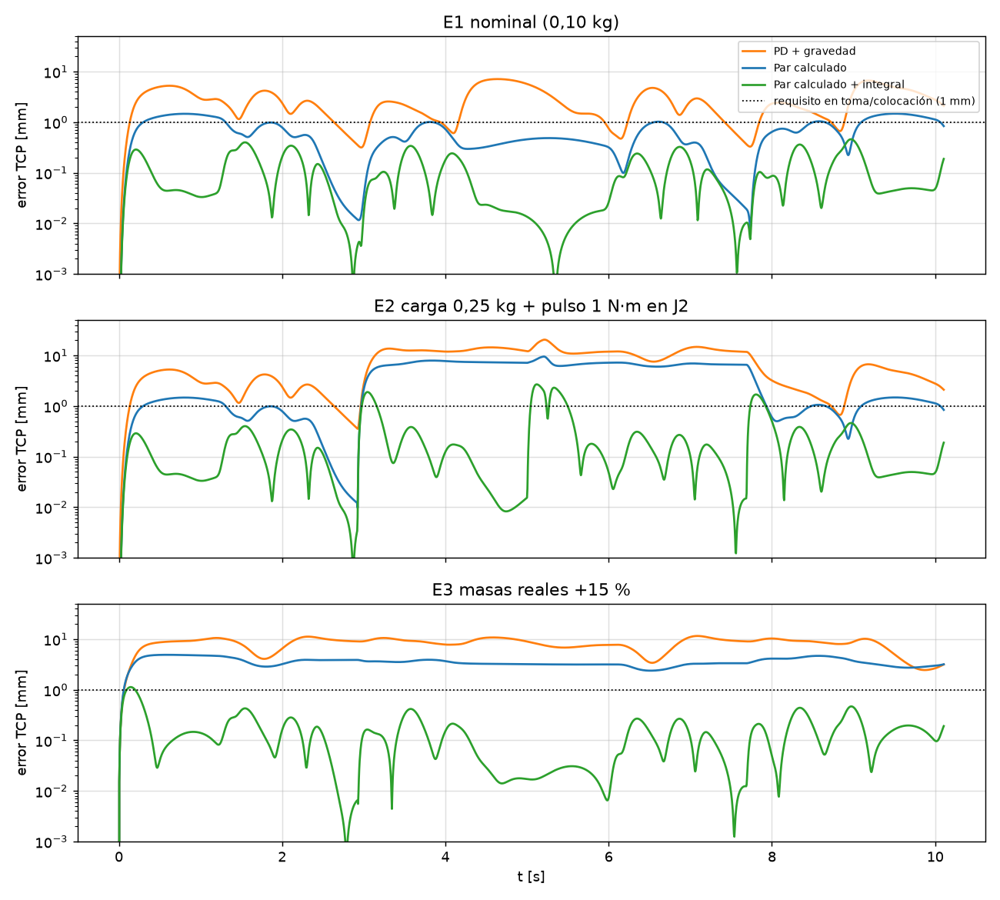
Figura 7. Error de posición del TCP en los tres ensayos con las tres leyes de control
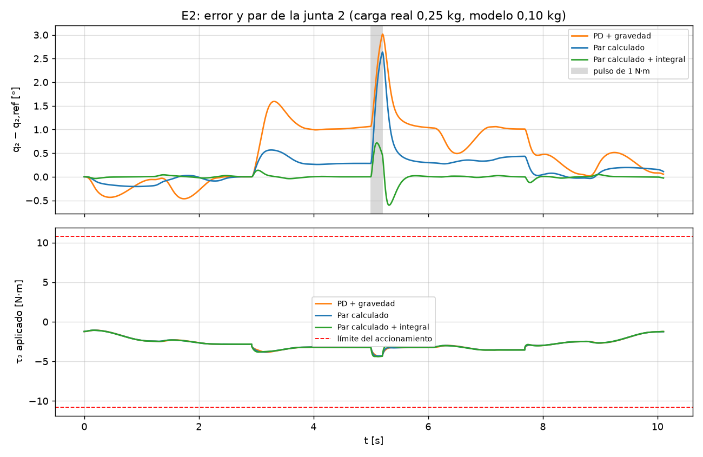
Figura 8. Ensayo E2: error y par del eje 2 frente al pulso de perturbación de 1 N·m
Saturación: ningún ensayo llega al límite de par. El pico del eje 2 es 4,4 N·m de 10,8 N·m disponibles
(41 %).
Error numérico:
Se repitió E1 con par calculado y h = T_s/4 (primeros 3 s del ciclo).
La diferencia en q es 1,0·10⁻⁴ rad, frente a un error de seguimiento de hasta 8·10⁻³ rad.
El error de integración es menor que el 2 % del error de control, así que los resultados no dependen del
paso elegido.
7.A.4 Interpretación
El par calculado reduce el error a la quinta parte respecto del PD+g en el caso nominal: 1,5 frente a
7,1 mm de máximo y 0,31 frente a 2,42 mm en la pinza.
El PD+g compensa solo la gravedad. Los pares de inercia y acoplamiento aparecen como error proporcional:
en el eje 2, unos 0,2 N·m de aceleración sobre K_p = 24 N·m/rad dan alrededor de 8 mrad, unos 2–3 mm en
el TCP.
El residuo del par calculado nominal viene sobre todo de la fricción no modelada (30 %).
Con error de modelo, ninguna de las dos leyes cumple R‑B‑4.
En E2, el peso de la pieza que el modelo desconoce, Δm·g·brazo ≈ 0,15·9,81·0,3 ≈ 0,44 N·m en J2, queda como
error estático Δτ/K_p,eff: unos 6–14 mm en la colocación.
En E3 el mecanismo es el mismo: el +15 % de masa no modelada deja un sesgo gravitatorio.
Subir ω_n reduciría ese error como 1/ω_n², pero exige más rigidez de los accionamientos y hace al lazo más
sensible a modos flexibles y retardos no modelados (Tema V §5.3).
La acción integral elimina el sesgo y cumple los requisitos en los tres ensayos:
toma y colocación ≤ 0,19 mm y ≤ 0,04°, con R‑B‑4 en 1 mm y R‑B‑5 en 1°;
seguimiento ≤ 2,7 mm, con R‑B‑6 en 5 mm.
El pulso de 1 N·m se rechaza en unos 0,4 s (figura control_J2_E2.png).
Como no hay saturación, el antiwindup no llega a actuar en estos ensayos; queda implementado para los
casos con saturación.
Pregunta de investigación (brazo).¿Cuánto mejora el seguimiento la compensación dinámica cuando la
carga real difiere del modelo?
Alternativas: PD+g, par calculado y par calculado con integral.
Condiciones fijas: trayectoria, ω_n, ζ, límites de par y planta.
Variables: e_máx, e_RMS, e en la pinza, τ pico.
Conclusión: la compensación dinámica sola mejora unas 5 veces el caso nominal, pero no basta ante una
carga 2,5 veces mayor que la modelada. La combinación de prealimentación por modelo e integral cumple
todos los requisitos con el mismo par pico.
Sin verificar: efectos de cuantización y ruido de encoder, retardo de cómputo, elasticidad de las
transmisiones impresas y la hipótesis de actuador de par.
Tipos de error (enunciado §7.3):
Numérico: < 2 % del total, comprobado con h/4.
De modelo: carga, masas y fricción no modeladas; es el que domina en E2 y E3.
De control: el error transitorio que dejan las ganancias elegidas; es el que domina el PD+g en E1.
7.B Control del AGV
Firmware: agv/firmware/agv_osoyoo/; simulación con el mismo algoritmo: agv/octave/simular_agv.m, ensayos_agv.m. Todo lo de esta sección es simulación; los ensayos físicos están en la sección 8.B.
7.B.1 Arquitectura de control del AGV
Tabla 20. Niveles de control del AGV
Nivel
Dónde corre
Período
Ley
Velocidad de rueda
Arduino (y su copia en Octave)
10 ms
u = sgn(ω_r)(|ω_r|/K + u_dz) + K_p e + K_i∫e, K_p = 8 PWM/(rad/s), K_i = 80 PWM/rad; integración condicionada; salida nula con referencia y rueda quietas
Pose
Arduino
20 ms
v_b = R(φ)ᵀ(ξ̇_d + K(ξ_d − ξ̂)), K = diag(1,6; 1,6; 2,4) s⁻¹, sobre la odometría
Trayectoria
Arduino
20 ms
Quíntico en (x, y, φ). T se alarga si violaría v_máx = 0,25 m/s, a_máx = 0,3 m/s², ω_máx = 1 rad/s o α_máx = 2 rad/s²
Saturación
Arduino
10 ms
Escala común de las 4 ruedas a ω_rueda,máx = 10 rad/s
Ajuste del PI. Con la planta G = K/(τs + 1), K = 0,125 rad/s/PWM (medido) y τ ≈ 0,045 s (modelo, con el
filtro de velocidad), el lazo de rueda queda con ω_n ≈ 15 rad/s y ζ ≈ 1,5: bien amortiguado y lento frente
a los 100 Hz de muestreo. Las ganancias se diseñaron con K = 0,05; con la K real el lazo es 1,6 veces más
rápido. Medido con el robot elevado (escalón de 3,75 rad/s de rueda,
agv/datos_lab/20261111-150746_s1d_pi_ruedas_7V): sobrepaso de 27–42 % y error en régimen < 2 %. El
sobrepaso es mayor que el del modelo de 1.er orden: la prealimentación suma la zona muerta de golpe y la
velocidad medida tiene una resolución de 0,42 rad/s (1 cuenta en 10 ms). La rueda queda dentro de ±10 % a
los 0,46–0,54 s. Se dejaron las ganancias porque en los GOTO la referencia es suave (quíntica), no un
escalón.
Lazo de pose. Sus ganancias, de 1,6–2,4 s⁻¹, son unas 4–6 veces más lentas que el lazo de rueda, lo que
separa las escalas de tiempo.
En la planta física, lo que se realimenta es la velocidad de rueda (encoders) y la pose estimada por
odometría. La pose real solo se conoce con la medición externa: marcas en el piso y video.
7.B.2 Ensayos simulados
Las mismas trayectorias que los ensayos físicos del §5.5, con el modelo ajustado a lo medido en el kit
(sección 5.C.4). El controlador usa la misma prealimentación que tiene cargada el robot: K identificado
elevado y zona muerta medida en el piso, distinta para cada rueda. La planta tiene una sola fricción,
igual para las cuatro.
Tabla 21. Error final real de los ensayos simulados del AGV según la estrategia de control (modelo con parámetros medidos)
Ensayo
0 · abierto
1 · PI de ruedas
2 · PI + pose
2C · pose + odometría calibrada
Duración
T1 avance 1,0 m
101 mm, 38°
31 mm
29 mm
0,2 mm
7,5 s
T2 lateral 0,6 m
426 mm, 48°
117 mm
118 mm
4,9 mm
5,3 s
T3 giro 90°
66 mm, 0,4°
0,1°
0,6°
0,2°
2,9 s
T4 A→B (1,2 m + 0,6 m lateral)
333 mm, 32°
130 mm
123 mm
4,9 mm
14,3 s
T5 A→B + 0,5 kg
344 mm, 32°
138 mm
131 mm
16,0 mm
14,3 s
Error final real respecto de la meta. El PWM máximo es de 157, menor que 255: no hay saturación.
Calibración. Los factores se obtienen de T1–T3 corridos con odometría nominal, como real/odometría:
η = (1,029; 0,805; 0,995). Reproducen el deslizamiento del modelo, que a su vez es el medido en el piso, y se
verifican en T4 y T5, que son ensayos distintos.
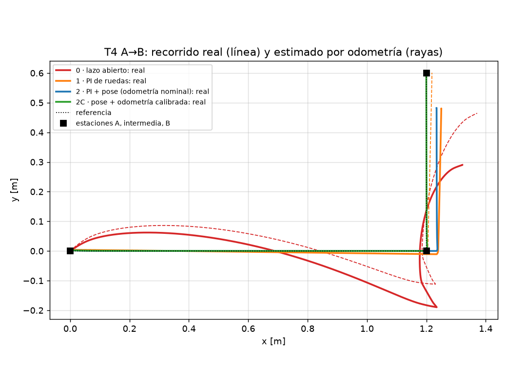
Figura 9. Trayecto T4 A→B simulado: recorrido real y odometría con cada estrategia de control
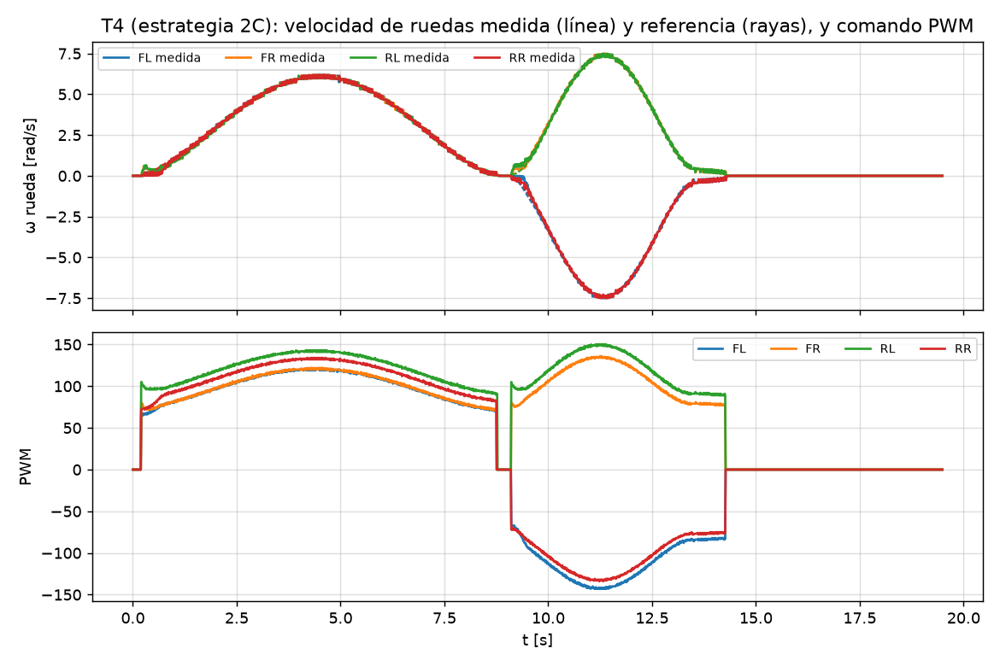
Figura 10. T4 con PI, lazo de pose y odometría calibrada (2C): velocidad de rueda medida y de referencia, y PWM de las cuatro ruedas
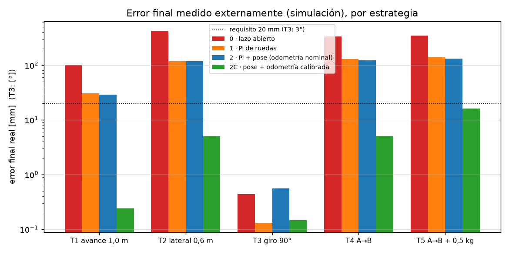
Figura 11. Error final real de los ensayos simulados T1–T5 según la estrategia
Lectura de los resultados:
Lazo abierto. La prealimentación sola gira el robot 30–50°. Cada rueda tiene su zona muerta en la
prealimentación (66–104 PWM), pero la fricción real de la planta es la misma para todas: las ruedas con
u_dz alta reciben de más y las otras de menos, y el recorrido se curva. En el trayecto A→B, además, el tramo
lateral arranca antes de llegar al punto intermedio (figura del recorrido T4). El abierto no corrige porque
no mide.
PI de ruedas. Elimina el error de velocidad de cada rueda: el robot hace lo que dicen los encoders.
Lazo de pose con odometría nominal. Sigue casi perfecto a su propia estimación, pero el deslizamiento de
los rodillos queda invisible: +3 % en avance, −20 % en lateral y −0,5 % en giro (valores medidos). Es la
misma conclusión del §13.4 de Lynch–Park.
Odometría calibrada. En la simulación lleva el error a pocos milímetros y cumple R‑AGV‑3 (≤ 20 mm, ≤ 3°)
en todos los casos. En el piso real no alcanza (sección 8.B): el deslizamiento lateral cambia de una
maniobra a otra y aparecen el acople lateral → avance y un giro que el modelo no tiene.
Con carga. El deslizamiento lateral extra de la carga (no calibrado) lleva el error a 16 mm: todavía dentro
del requisito, pero muestra que la calibración depende de la carga.
Pregunta de investigación (AGV).
Pregunta: ¿el desplazamiento lateral es menos preciso que el longitudinal y cuánto mejora la
calibración?
Respuesta en simulación: sí. Con odometría nominal, el lateral de 0,6 m deja 118 mm contra 29 mm en 1,0 m
de avance. Calibrar reduce ambos más de 20 veces.
Respuesta física en la sección 8.B: el lateral es el movimiento menos preciso, pero calibrar solo mejora
lo que se repite igual en cada maniobra.
Comunicación. El enlace con la PC es WiFi (ESP8266 del shield en UDP transparente, firmware agv-0.2.0).
En la red del laboratorio la latencia ida y vuelta fue de 51 ms de mediana (p95 93 ms, máx. 295 ms, 0 perdidos
en 200). El watchdog de comunicación se llevó de 300 a 600 ms. En la hora de más uso aparecieron huecos de
hasta 1,2 s y en las últimas corridas se usaron 1,5 s solo mientras duraba la corrida.
Pendiente de verificación: masa, inercias, constante de tiempo de los motores, ruido real del encoder y
variación de V_bat durante el ensayo (la lectura de batería quedó inválida en la segunda mitad de los
ensayos, sección 8.B).
7.C Arquitectura de software, tiempos e interfaz
7.C.1 Arquitectura
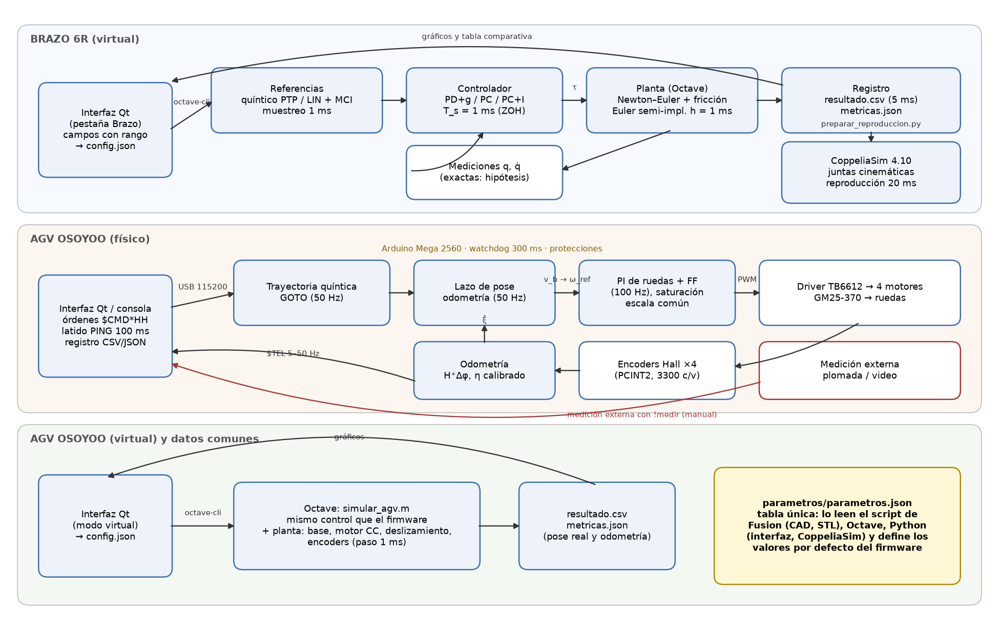
Figura 12. Arquitectura de software: generación de referencias, controlador, planta simulada o física, sensores y estimadores, interfaz y registro
Quién integra la dinámica y cómo circulan los datos:
Brazo (virtual). Octave integra la planta y ejecuta el controlador en el mismo bucle
(simular_control_brazo.m).
La interfaz escribe config.json con los parámetros del ensayo.
Ejecuta octave-cli correr_desde_gui(...).
Lee resultado.csv (t, q_ref, q, q̇, τ, errores del TCP, tramo) y metricas.json.
CoppeliaSim no integra nada: reproduce el q(t) resultante con juntas en modo cinemático (7.C.4).
AGV (físico). La «planta» es el robot real.
La trayectoria, los dos lazos, la odometría y las protecciones corren en la Arduino Mega.
La PC envía órdenes de texto con suma de verificación ($CMD,…*HH), mantiene vivo el enlace con un
latido cada 100 ms y registra la telemetría.
La pose real solo se conoce con la medición externa (plomada sobre la cuadrícula y video).
AGV (virtual). Octave ejecuta el mismo algoritmo que el firmware (simular_agv.m es una copia de
nucleo.cpp) sobre la planta simulada. Así, simulación y ensayo físico usan las mismas referencias y
ganancias.
Parámetros. Todos salen de parametros/parametros.json. El firmware tiene los mismos valores por
defecto, que se pueden cambiar en línea con las órdenes GAIN, LIM, MDL, CAL y GEO, y se guardan en
EEPROM.
7.C.2 Tiempos
El enunciado (§7.3) pide distinguir cuatro tiempos: el paso de integración numérica, el período del
controlador, la adquisición de datos y la frecuencia de actualización gráfica.
Tabla 22. Tiempos de integración, control, adquisición y gráficos
Proceso
Brazo (virtual)
AGV (físico)
AGV (virtual)
Paso de integración de la planta
h = 1 ms, Euler semi-implícito (comprobado con h/4)
— (robot real)
1 ms
Período del controlador
T_s = 1 ms, retención de orden cero
Ruedas 10 ms; pose y trayectoria 20 ms
Igual al firmware
Adquisición / registro
CSV cada 5 ms
Telemetría 5–50 Hz (20 por defecto, 50 en identificación)
10 ms
Actualización gráfica
Al terminar la simulación; CoppeliaSim a 20 ms
10 Hz en la interfaz, 1 Hz en la consola
Al terminar
Comunicación y seguridad
—
Latido 100 ms; watchdog 300 ms; órdenes con TTL de 500 ms
—
Sincronización y retardos en el AGV.
El lazo del firmware es de período fijo: 10 ms medidos con micros().
La telemetría sale por una cola no bloqueante. Si la cola se llena se descarta una línea entera y se
cuenta, así que la comunicación nunca alarga el período.
El firmware informa en cada línea de telemetría el tiempo de ejecución del lazo y el peor período
observado. Así se comprueba durante el ensayo que el control mantiene su período mientras la interfaz
está funcionando.
La PC agrega la hora de llegada de cada línea (t_pc). La diferencia con el reloj del Arduino (t_ms) da el
retardo de comunicación.
Medido en el laboratorio (11/11/2026, 7979 muestras con el robot en movimiento en los ensayos del piso,
enlace WiFi):
ejecución del lazo de 10 ms: mediana 3,4 ms y máximo 5,3 ms, un 53 % del período en el peor caso;
peor período: mediana 10,0 ms, p99 11,9 ms y máximo 13,3 ms, por debajo del límite de la protección
(3 períodos);
latencia PC ↔ robot por WiFi (PING → PONG, 200 muestras): mediana 51 ms, p95 93 ms, máximo 295 ms, sin
pérdidas. En horas de mucho uso de la red hubo huecos de 0,3–1,2 s.
Límite encontrado: con PWM ≥ 200 las interrupciones de los encoders (x4, 4 ruedas) estiran el período a
18–31 ms. Por eso la velocidad de rueda se limita a 10 rad/s (PWM ~150–190).
7.C.3 Interfaz de operación
Una sola aplicación, interfaz/robot_gui.py (Python 3.13 con PySide6 y pyqtgraph), con dos pestañas. El
detalle de cada campo está en interfaz/LEEME_INTERFAZ.md.
Brazo (virtual).
Campos: ley de control, ω_n por grupo de ejes, ζ, fracción de fricción conocida, masa real y supuesta
de la pieza, escala de masas, perturbación (junta, instante, duración, amplitud) y margen de duración
de las trayectorias.
Cada campo tiene nombre, unidad y rango. Los valores se validan en la interfaz y Octave los vuelve a
acotar.
Los cambios rigen en la simulación siguiente.
Muestra q_ref y q, el error del TCP y los pares con su límite. Puede superponer hasta cuatro ensayos y
tiene una tabla comparativa de métricas.
AGV, en modo físico o virtual. Es un selector excluyente: para pasar a virtual hay que desconectar el
robot.
Conexión: por WiFi (UDP; el robot avisa su IP y la interfaz recuerda la última conocida) o por USB.
Comandos: movimiento manual (VEL), ir a pose (GOTO, modo 0, 1 o 2), ganancias del PI y del lazo de
pose, límites, calibración de odometría y frecuencia de telemetría.
Cada orden rige en el período siguiente a su confirmación (≤ 10 ms).
Piso de baldosas. El gráfico principal es el piso del laboratorio en baldosas de 30 cm, con el
origen A (pose del último ZERO) y el punto B.
El auto se dibuja con su chasis y sus cuatro ruedas, mirando hacia +y en A, como lo ve el operador
desde atrás.
Un clic en el piso fija el destino del GOTO en cualquier punto, con ajuste libre, cada 5 cm, a
esquinas o a centros de baldosa. Se puede enviar con el clic o con «Ir al destino».
La interfaz convierte entre el marco de la pantalla y el del robot (x adelante): x_robot = y_pantalla,
y_robot = −x_pantalla.
Tiempo real. El auto se redibuja a 20 Hz con la pose que manda el robot, junto con el trazo de la
odometría y la referencia. En virtual, la simulación se reproduce animada a velocidad real.
Muestra además las velocidades de rueda medidas y de referencia y el PWM.
Permite cargar la medición externa y calcula el error con envoltura angular por atan2.
Seguridad.
STOP (botón o Esc), DIS (motores libres) y CLR + ARM para salir de una falla.
El registro avisa qué falta cuando se intenta mover el robot desarmado o en falla, y marca los rechazos
del firmware (NAK).
Casilla para desactivar en RAM la vigilancia de batería si la lectura de A5 no es válida.
Al cerrar la ventana se envía DIS. Si la PC deja de comunicarse:
con órdenes manuales, el robot para a los 600 ms;
en un GOTO entra en pausa: congela la trayectoria y frena, y sigue sola cuando vuelven los
mensajes; recién a los 3 s marca falla (firmware agv‑0.2.2, sección 8.B).
El firmware vuelve a acotar todo valor recibido.
Registro. Cada ensayo crea una carpeta con su identificación, fecha, parámetros usados
(parametros_usados.json o PAR leídos con GET), datos (resultado.csv o telemetria.csv),
eventos y notas.
Consola de laboratorio (agv/pc/agv_consola.py). Para el trabajo en el laboratorio se agregó una
consola de texto con guiones (agv/pc/guiones/) y medición externa asistida (!medir). Registra en el
mismo formato que la interfaz y funciona por USB o por WiFi (udp).
Corridas de ensayo (agv/pc/corrida.py). Ejecuta un ensayo completo por WiFi (CLR, ZERO, ARM, GOTO,
espera del FIN, DIS) y después agrega la medición externa (--medir). Las opciones --amax, --wd y
--sin-bat cambian, solo durante la corrida, la aceleración, el watchdog de comunicación y la vigilancia
de batería.
7.C.4 Entorno gráfico (CoppeliaSim)
Archivos: coppelia/celda_integrador.ttt, que se construye con coppelia/construir_escena.py y se verifica
con coppelia/verificar_escena.py (documentación en coppelia/LEEME_COPPELIA.md).
Brazo. STL de Fusion importados en mm, con escala ×0,001, en la pose cero. Seis juntas de revolución
ubicadas en las tramas DH, con los límites del JSON.
Modo de las juntas: cinemático. No hay motor físico ni controladores internos de CoppeliaSim: todas
las formas son estáticas y no respondientes.
Escena. Contiene la celda (estaciones A y B, pedestal, mesa y bandeja C), el AGV y la pieza.
Reproducción. Un script Lua de la escena lee reproduccion.csv, muestreado a 50 Hz, y en cada paso de
20 ms fija las juntas, la pose del AGV y la de la pieza. La pieza viaja sobre el AGV, sigue al TCP entre
el cierre y la apertura de la pinza y queda en C.
Origen de los datos. El CSV combina:
la pose del AGV del ensayo simulado T4 (control de pose con odometría calibrada);
el q(t) del brazo con par calculado e integral, en el caso nominal.
8. Validación
8.A Comprobaciones realizadas
Cada modelo y cada herramienta se comprobó contra una referencia independiente. Todas las comprobaciones se
reproducen con los scripts indicados.
Tabla 23. Comprobaciones del brazo, de la cadena de software y del AGV
Comprobación
Referencia independiente
Resultado
Script / registro
CAD = modelo
Puntos clave del CAD vs MCD; volúmenes y centros de masa Octave vs Fusion
Error < 10⁻⁹ m; < 0,1 % y < 0,01 mm
verificar_pose_cero.m, verificar_dinamica.m
MCD en poses conocidas
Geometría a mano
< 10⁻¹⁶ m
verificar_cinematica.m
MCD ∘ MCI
2000 poses aleatorias
1,1·10⁻¹³; la configuración original está entre las 8 soluciones en el 100 %
ídem
Jacobiano
Derivada numérica de la MCD (200 poses)
3,2·10⁻¹⁰
ídem
det J en forma cerrada
det numérico (200 poses)
10⁻¹⁴
ídem
Newton–Euler
Lagrange (50 estados, 0,25 kg)
ΔM 6·10⁻¹⁷; Δτ 10⁻¹⁰ N·m
verificar_dinamica.m
Dinámica directa
Conservación de la energía en caída libre; balance de trabajo
1·10⁻⁴ rad, frente a 8·10⁻³ rad de error de control
ensayos_control_brazo.m
CoppeliaSim = cálculo
q leídas de la escena vs CSV; TCP vs pieza
1,2·10⁻¹³ rad; 0,0 mm durante el agarre
coppelia/verificar_escena.py
Interfaz = scripts
Ensayo desde la interfaz vs script directo
Iguales (AGV T4: 4,9 mm en 13,7 s)
interfaz/LEEME_INTERFAZ.md
Cinemática mecanum
Rango de H, H⁺H = I, espacio nulo
Rango 3; 2·10⁻¹⁶
verificar_cinematica_agv.m
Método de identificación
Parámetros conocidos de la planta simulada; validación con escalones distintos
K y u_dz recuperados; error de validación 0,001 rad/s
identificacion_simulada.m
Calibración de odometría
η obtenido de T1–T3 vs η de la planta; verificación en T4 y T5
(1,029; 0,805; 0,995) = valores de la planta
ensayos_agv.m
Interfaz por WiFi
Robot simulado por UDP en la misma PC
Aviso de IP, GET, PING/PONG y GOTO desde un clic en la cuadrícula correctos
prueba de software
Consola de laboratorio
Puerto serie en bucle (sin robot)
Órdenes, fin de movimiento y medición externa correctos
prueba de software
Figuras de resultados del brazo: sección 6.A (ciclo) y 7.A (control). Del AGV simulado: sección 7.B.
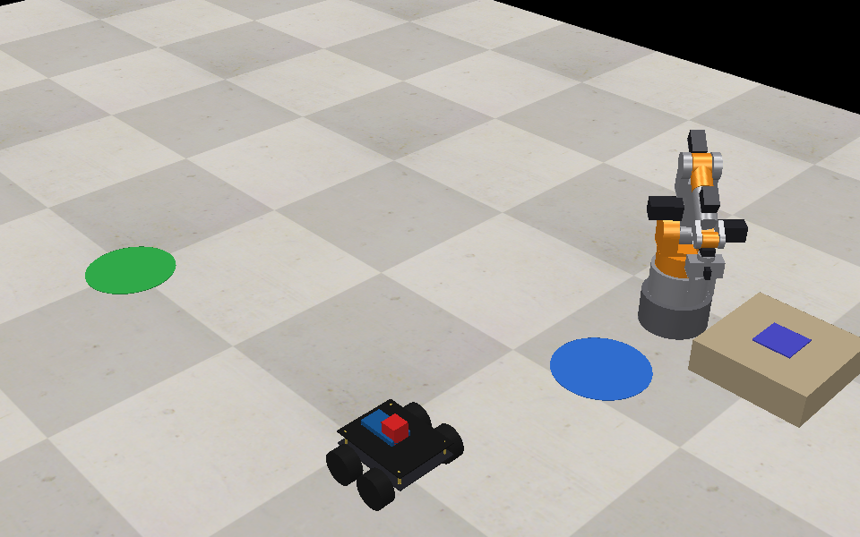
Figura 13. Escena de CoppeliaSim durante el traslado del AGV: la pieza viaja en la bandeja
8.B Ensayos físicos del OSOYOO
Ensayos del 07/11 y 11/11/2026 sobre el kit OSOYOO (Arduino Mega 2560, firmware agv-0.1.2 a agv-0.2.3).
Registros: agv/datos_lab/<fecha>_<ensayo>_m<modo>_r<rep>/ (telemetría a 50 Hz y eventos). Mediciones
externas: agv/datos_lab/mediciones_piso.csv. Resumen y figuras: agv/python/figuras_piso.py →
agv/resultados/ensayos_piso_resumen.csv. Los ensayos usan las mismas referencias que la simulación
(sección 6.B).
Sesión 1. Puesta en marcha e identificación (robot elevado).
Cuentas por vuelta: 1482 (x4), 5 vueltas a mano por rueda, con una dispersión de 1,8 % entre ruedas.
La ficha del motor (75:1 y 11 PPR) daba 3300: el motor instalado es otra variante (~33,7:1).
Sentidos de motor y de encoder: comprobados rueda por rueda (máscaras SIGN 15 5).
Identificación: K y zona muerta por rueda (sección 5.C.4).
PI de ruedas: sobrepaso de 27–42 % y error en régimen < 2 % (sección 7.B.1).
Relevamiento: 2l_x = 10 cm y 2l_y = 20 cm (±1 cm) con la app de medición del celular. Ni la masa ni el
patrón de rodillos se midieron; el comportamiento coincide con el patrón X.
Sesión 2. Ensayos del enunciado (§5.5).
Órdenes por WiFi. Desde agv/pc/corrida.py, sin cable: CLR, ZERO, ARM, GOTO, espera del FIN y DIS.
El operador queda junto al robot.
Referencia externa. Las baldosas del laboratorio, de 30 × 30 cm. El origen A está en un cruce de juntas
y el eje x sigue una junta. Al final de cada corrida se fotografía el robot con la app de medición del
celular: distancia a lo largo de la junta hasta el cruce más cercano, distancia lateral hasta el centro del
robot y orientación del chasis respecto de las juntas. La orientación sale de un triángulo medido o de la
foto. Incertidumbre estimada: ±2 cm en posición, ±1° con triángulo y ±3° desde la foto.
Diferencias con lo planificado. Por tiempo, cada ensayo tuvo 1 corrida en modo 0 y 2 en modo 2; el modo
1 no se ensayó en el piso y T5 en modo 0 tampoco. Se agregaron dos variantes de T5 para estudiar el giro en
el tramo lateral: rampa suave (amax 0,15 m/s², T5S) y rampa rápida (0,60 m/s², T5A, sin medición).
Batería. Entre 7,0 y 7,4 V. Desde las 17:54 la lectura del divisor de A5 quedó inválida (~2,2 V con
7,2 V en el tester; probablemente se movió el cable del divisor mientras otro grupo usaba el kit). Las corridas siguientes se hicieron con
la protección de batería desactivada solo durante la corrida (--sin-bat), controlando con el tester.
Tabla 24. Ensayos físicos planificados
Ensayo
Propósito
Estado inicial
Referencia
Carga
Parámetros
Repeticiones
Variables registradas
T1
Avance longitudinal y error final
En A, φ = 0, CAL = 1
(1,0; 0; 0), 7,5 s
Ninguna
GOTO modos 0, 1 y 2
2 + 1 + 3
t, pose odométrica y de referencia, ω_ref y ω_med de las 4 ruedas, PWM, V_bat, pose medida
T2
Lateral y diferencia con T1
ídem
(0; 0,6; 0), 4,5 s
Ninguna
ídem
2 + 1 + 3
ídem
T3
Giro sobre el centro: orientación y desplazamiento del centro
ídem
(0; 0; π/2), 3 s
Ninguna
ídem
2 + 1 + 3
ídem
—
Calibración de odometría
—
η = real/odometría en T1–T3, modo 2
—
calcular_cal.py → CAL
—
η_x, η_y, η_ω con su dispersión
T4
Trayecto entre estaciones A → B
En A
(1,2; 0; 0) → (1,2; 0,6; 0)
Pieza
Modos 0, 1, 2 con CAL = 1; modo 2 con CAL calibrado
2 + 1 + 3 + 3
ídem
T5
Repetición con carga conocida
En A
igual que T4
+0,5 kg pesados, centrados
Modos 0 y 2, CAL calibrado
1 + 3
ídem + masa
8.B.1 Resultados
Tabla 25. Resultados físicos frente a la simulación (error final real respecto de la meta; un valor por corrida válida)
Ensayo
Modo
n
Error de posición físico
Orientación final física
Deriva de la odometría
Simulado (mismo modo)
T1 avance 1,0 m
0
1
399 mm
−13°
73 mm
101 mm, −38°
T1
2
2
30 / 50 mm
0° / 0°
28 / 54 mm
29 mm, 0°
T2 lateral 0,6 m
0
1
600 mm: no se movió
0°
1 mm
426 mm, −48°
T2
2
2
216 / 225 mm (y: 480 mm de 600; x: +180 / +190 mm)
0° / 0°
215 / 224 mm
118 mm, 0°
T3 giro 90°
0
1
centro en A
26° de 90° (odometría 14°)
25 mm
66 mm, −0,4°
T3
2
2
centro en A
90° / 90° (odometría 90,7° / 90,3°)
5 / 0 mm
0,3 mm, −0,6°
Calibración
—
—
η = real/odometría en modo 2: η_x = 1,029, η_y = 0,805, η_ω = 0,995
T4 A→B
0
1
517 mm (en (808; 263) mm)
+19°
65 mm
333 mm, −32°
T4 A→B
2 calibrado
2
149 / 152 mm (en (1310; 700) y (1260; 740) mm)
≈0° / ≈0°
151 / 155 mm
4,9 mm, 0°
T5 A→B + 0,5 kg
2 calibrado
2
114 / 200 mm
−10° / −12°
117 / 201 mm
16 mm, 0°
T5S (rampa suave)
2 calibrado
1
171 mm
−8°
172 mm
—
Duración del trayecto A→B (desde el arranque hasta el FIN): 14,7 y 15,0 s en T4 calibrado, 17,6 y
18,3 s en T5 y 16,5 s en T5S. Con carga, los dos tramos terminan por tiempo (T + 2 s) porque las ruedas se
pegan antes de entrar en la tolerancia de llegada (5 mm, 0,57°).
Corridas descartadas (carpetas _INVALIDA_). Las protecciones actuaron como se diseñaron:
Corrida
Causa
Protección
T1 m0 r1
Ruedas pegadas al piso a baja velocidad
Traba (1,5 s); se llevó a 5 s en modo 0
T2 m0 r1
Una rueda delantera giraba en el aire
— (repetida)
T3 m2 r1
Lectura de batería en A5 = 2,2 V
Batería
T4C m2 r2
Al llegar al punto intermedio seguía corrigiendo 0,6° con las ruedas pegadas
Traba (1,5 s); se llevó a 2,5 s en modo 2, mayor que los 2 s de margen del FIN
T5 m2 r2
Desnivel en el piso
— (repetida)
T5A m2 r1
Huecos de WiFi de hasta 1,2 s
Watchdog de comunicación (600 ms)
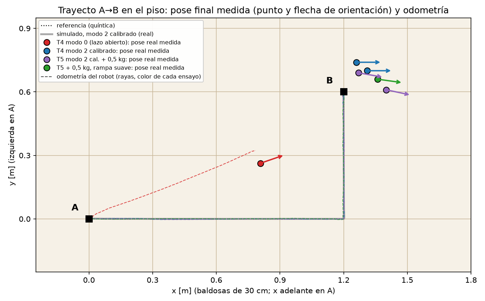
Figura 14. Trayecto A→B en el piso: pose final medida de cada corrida (punto y orientación), odometría del robot (rayas) y simulación
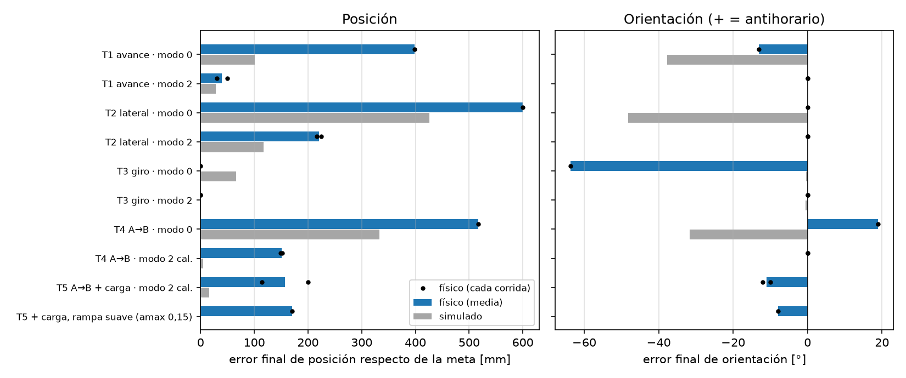
Figura 15. Error final de posición y de orientación de cada ensayo físico (media y corridas) frente a la simulación
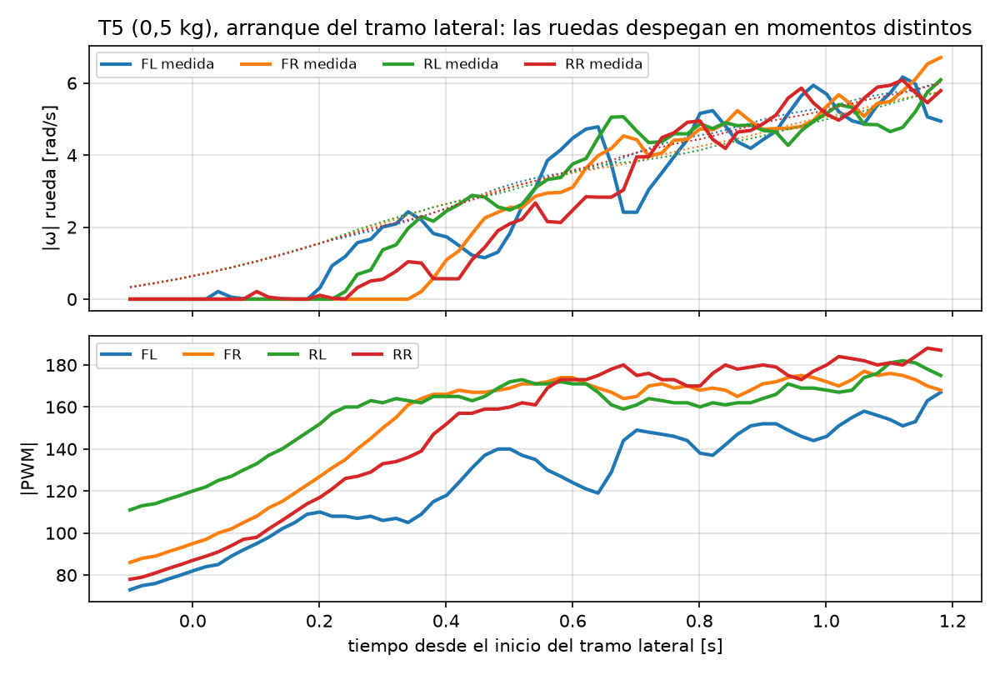
Figura 16. T5 con 0,5 kg, arranque del tramo lateral: velocidad y PWM de cada rueda; FR despega ~150 ms después que FL
Pausa ante cortes de comunicación (agv‑0.2.2, después de los ensayos). La corrida T5A se había cortado
por huecos de WiFi de hasta 1,2 s, así que se agregó al firmware una pausa:
Funcionamiento: en un GOTO, si los mensajes se cortan más que el watchdog (600 ms), el robot congela
la trayectoria y frena, y sigue sola cuando vuelven; recién a los 3 s sin mensajes marca falla.
Prueba (agv/pc/prueba_pausa_com.py, robot elevado, por USB y por WiFi): la PC dejó de enviar
mensajes a propósito.
Corte de 1,5 s en un GOTO de 0,5 m: la referencia quedó congelada (173–177 mm), las ruedas bajaron
de 5,9 rad/s a 0 y, al volver los mensajes, el GOTO terminó en 498 mm (3 mm de error por WiFi).
Corte de 4 s: falla de comunicación a los ~3 s, como se diseñó.
8.B.2 Análisis
Lazo abierto contra lazo cerrado.
En el piso el lazo abierto es mucho peor que en la simulación: en T2 no llegó a moverse, en T3 giró
26° de 90° y en T1 y T4 quedó a 40–52 cm.
La causa es la fricción estática. Por debajo de ~1,5 rad/s las ruedas se pegan al piso, y al
despegar no lo hacen todas juntas. El modelo tiene solo fricción de Coulomb (igual en reposo y en
movimiento), así que no lo reproduce.
Los encoders sí miden bien en lazo abierto: en T4 la odometría quedó a 65 mm de la pose real. Lo que
falla es que nadie usa esa medición.
El modo 2 corrige lo que miden los encoders: en avance 1,0 m deja 3–5 cm y el giro de 90° es exacto.
El lateral es el movimiento menos preciso (pregunta de investigación 3). Para la misma orden, el
avance tiene 4 cm de error y el lateral 22 cm:
los rodillos deslizan, y el robot recorre en y solo el 80 % de lo que miden los encoders;
además avanza 18 cm en x sin que las ruedas lo registren: un acople lateral → avance que el modelo
no tiene.
El giro sobre el centro es el más preciso: η_ω = 0,995.
La calibración ayuda menos que en la simulación. Corrige lo que se repite igual en cada maniobra, y
el lateral no se repite:
en el trayecto A→B el tramo lateral deslizó mucho menos que en T2 (real/odometría 0,95–1,0 contra
0,80), así que η_y = 0,805 lo sobrecorrigió y el robot se pasó 10–14 cm en y;
el acople lo corrió 6–11 cm en x;
resultado: 15 cm de error en A→B, contra 52 cm del lazo abierto, con muy buena repetibilidad (las dos
corridas a 6 cm entre sí) y la orientación exacta. No cumple R‑AGV‑3 (≤ 20 mm, ≤ 3°); la simulación
calibrada daba 4,9 mm.
Con 0,5 kg el robot termina girado 8–12° en sentido horario, y la odometría lo ve en menos de 1°.
La telemetría del arranque del tramo lateral (figura) muestra el mecanismo: las ruedas despegan con
160–220 ms de diferencia, y FR, la última, necesita PWM 164 contra 79 sin carga.
Mientras una rueda sigue pegada, las otras tres arrastran el chasis y lo hacen girar deslizando. Ese
giro no pasa por las ruedas, así que ningún encoder lo puede medir.
Con una rampa más suave (amax 0,15 en vez de 0,30) bajó a −8°, sin desaparecer. Adelantar el despegue
con una rampa rápida (0,60) no acercó los arranques: siguieron separados por 221 ms.
La simulación sirve para lo que modela. Con odometría nominal predijo bien el avance (29 mm contra
30–50 mm) y el error lateral en y (118 mm contra 120 mm), y el giro exacto. No predice la fricción
estática, el acople lateral → avance, la variación del deslizamiento entre maniobras ni el giro por
arranques desparejos. Esos cuatro efectos explican la diferencia entre 5 mm simulados y 15 cm reales.
Conclusión de la validación física. Con odometría de ruedas mecanum, el lazo cerrado lleva el error
de "metros" a "centímetros" y es repetible. Bajar a milímetros exige medir la pose sin pasar por las
ruedas: una IMU para el ángulo, marcas en el piso o una cámara (sección 9).
8.C Comparación de alternativas (preguntas de investigación)
1. Brazo: ¿cuánto mejora el seguimiento la compensación dinámica cuando la carga real difiere del modelo?
Alternativas: PD + gravedad, par calculado y par calculado con integral.
Condiciones fijas: trayectoria, ω_n, ζ, límites de par y planta.
Variables: error del TCP (máximo, RMS y en la pinza), ángulo y τ pico.
Resultado (sección 7.A.3):
en el caso nominal, el par calculado reduce el error unas 5 veces frente al PD+g;
con 0,25 kg reales y 0,10 kg en el modelo, ni el PD+g (14,2 mm) ni el par calculado (6,8 mm) cumplen
R‑B‑4 en la colocación;
con integral, el error en la colocación es ≤ 0,19 mm en los tres ensayos.
Elección: par calculado con integral.
Sin verificar: cuantización del encoder, retardos, elasticidad de las transmisiones e hipótesis de
actuador de par.
2. Brazo: ¿qué reducción conviene en el eje más exigido?
Alternativas: N₂ = 20 y 30, con el mismo motor.
Variables: carga admisible estática en todo el espacio articular, uso del motor, velocidad del motor
e inercia reflejada.
Resultado (5.B.4 y 6.A.3):
con 20, la carga admisible es 0,221 kg y no alcanza los 0,25 kg de R‑B‑3;
con 30 es 0,379 kg y el límite pasa al eje 4;
el costo es una velocidad de motor 1,5 veces mayor (450 rpm a 90 °/s) y una inercia reflejada 2,25
veces mayor.
en el ciclo, el motor 2 trabaja al 31 % de pico.
Elección: N₂ = 30.
3. AGV: ¿el desplazamiento lateral es menos preciso que el longitudinal, y cuánto mejora la calibración de
la odometría?
Alternativas: avance de 1,0 m vs lateral de 0,6 m; odometría nominal vs calibrada.
Variables: error final real, deriva de la odometría y repetibilidad.
Resultado en simulación (7.B.2, modelo con los parámetros medidos):
con odometría nominal, el lateral deja 118 mm en 0,6 m, frente a 29 mm en 1,0 m de avance;
calibrar reduce ambos más de 20 veces.
Resultado físico (8.B):
el lateral es claramente el menos preciso: 22 cm en 0,6 m contra 4 cm en 1,0 m, por deslizamiento en y
(−20 %) y acople a x (+18 cm);
la calibración no se transfiere bien de T2 al trayecto A→B porque el deslizamiento lateral cambia con la
maniobra (0,80 en T2 y 0,95–1,0 en A→B). Error A→B: 15 cm calibrado contra 52 cm en lazo abierto.
Respuesta: sí, el lateral es menos preciso. Con un factor fijo por eje, la calibración corrige el
promedio de una maniobra pero no la variación entre maniobras.
4. AGV: ¿cuánto aporta cada nivel de control?
Alternativas: lazo abierto (solo prealimentación con el modelo identificado), PI de ruedas y PI más lazo
de pose.
Resultado en simulación (T4): 333, 130 y 123 mm. El abierto falla porque la prealimentación de cada
rueda no coincide con la fricción real y porque los motores no son iguales.
Resultado físico:
modo 0: 517 mm y 19° en T4; en T2 no se movió y en T3 giró 26° de 90°;
modo 2 calibrado: 15 cm y 0°;
el modo 1 no se ensayó en el piso.
En lazo abierto la fricción estática (ruedas que se pegan por debajo de ~1,5 rad/s) es mucho peor que en
el modelo.
Respuesta: el lazo de velocidad de rueda con encoders aporta casi toda la mejora: convierte un robot que
no completa las maniobras en uno que llega a centímetros con la orientación correcta. El lazo de pose
agrega la llegada exacta según la odometría. El error que queda es el de la odometría misma.
5. Diseño: ¿cómo conviene imprimir la pieza crítica?
Alternativas: L2 acostado (capas normales al eje de la articulación) o parado (capas normales al
eslabón).
Resultado (4.B): acostado da un FS entre 26 y 29 % mayor, deja los agujeros verticales y, dividido en
dos, entra en la cama.
Elección: acostado, en dos mitades con pasadores.
9. Discusión
9.1 Interpretación
El brazo está dominado por la gravedad, no por la inercia.
En el eje 2, el par dinámico pico supera al estático en solo un 7 % (6.A.3). Por eso acortar el ciclo casi
no aumenta la exigencia de los motores.
Por la misma razón, el error del control con modelo imperfecto es sobre todo un sesgo gravitatorio:
la masa no modelada multiplicada por g y por el brazo de palanca, dividida por la rigidez del lazo.
Ese sesgo explica por qué la acción integral resuelve E2 y E3 sin aumentar el par pico.
La rigidez estructural es comparable con el error de control.
L2 se deforma 0,30 mm en la colocación (4.B.6), del orden del error del control (0,15–0,46 mm).
Los encoders de los motores no ven esa deformación. El presupuesto de error de R‑B‑4 (1 mm) queda
ajustado cuando se suman las demás contribuciones no modeladas.
En el AGV, lo que limita es el estimador.
El lazo de pose sigue casi perfectamente a la odometría (en el piso, < 1° y < 5 mm según los encoders).
El error final real es el deslizamiento de los rodillos, que los encoders no ven: +3 % en avance, −20 % en
lateral y −0,5 % en giro (medidos), más el acople lateral → avance y el giro por arranques desparejos con
carga (sección 8.B).
La calibración corrige solo la parte que se repite. La mejora de fondo es medir la pose sin las ruedas:
una IMU (MPU‑6050) para el ángulo en el lazo de pose y una marca visual en B para la aproximación final.
9.2 Tipos de error
Numérico. Se acotó repitiendo el cálculo con un paso menor:
en el control del brazo es < 2 % del error total;
en la dinámica directa, la energía se conserva dentro de 5·10⁻⁷ J.
No condiciona ninguna conclusión.
- De modelo. Es el dominante en los ensayos con incertidumbre:
- brazo: carga, masas y fricción;
- AGV: deslizamiento, zona muerta en el piso y dispersión entre motores.
- De control. Es el error transitorio que dejan las ganancias con el modelo exacto. Domina en el PD+g
nominal (7 mm).
9.3 Límites del modelo
Brazo.
Actuadores ideales de par: requiere drivers de lazo cerrado.
Transmisiones rígidas, sin juego.
Mediciones exactas: sin cuantización ni ruido.
Fricción con valores estimados.
Geometría simplificada: sin alojamientos ni rodamientos.
Material con propiedades de bibliografía.
AGV.
Geometría, K, zona muerta, dispersión entre motores y deslizamiento están medidos en el kit (5.C.4
y 8.B). Masa, inercias y constante de tiempo siguen estimadas.
La fricción es solo de Coulomb, sin fricción estática mayor, así que el modelo no reproduce que las
ruedas se peguen a baja velocidad.
El deslizamiento se modela como un factor constante por dirección. En el piso depende de la maniobra, la
carga y la superficie, y además acopla el lateral con el avance.
K del accionamiento es proporcional a V_bat, que baja durante la sesión.
9.4 Lo previsto frente a lo medido en el piso
Antes de los ensayos se había previsto que el robot real:
necesitaría más PWM para arrancar en el piso que con las ruedas elevadas. Se confirmó: 15–30 PWM más;
tendría en lazo abierto una dispersión mayor que la simulada. Fue peor: con la fricción estática el
lazo abierto ni siquiera completa las maniobras (T2 no se movió, T3 giró 26° de 90°);
perdería más precisión en el lateral que en el avance. Se confirmó: 22 cm contra 4 cm.
Aparecieron además tres efectos que el modelo no tenía:
Acople lateral → avance: el robot avanza 6–18 cm al moverse 0,6 m de costado.
Deslizamiento lateral variable: 0,80 en T2 y 0,95–1,0 en el tramo lateral de A→B. Un factor fijo no lo
calibra.
Giro por arranques desparejos con carga: 8–12°, invisible para los encoders.
Lo que sí se verificó del modelo:
los signos, el patrón X de rodillos y l_x + l_y: el giro de 90° en modo 2 es exacto y η_ω = 0,995;
el radio efectivo, que da +3 % en avance.
Superficie. Sobre otra superficie del laboratorio, el operador observó que los mismos movimientos
salían sin desvío visible. Es coherente con que el error venga del deslizamiento sobre el piso cerámico y
no del control, pero no se midió.
9.5 Mejoras propuestas
Medir la pose del AGV sin pasar por las ruedas. Es la mejora que más reduce el error real:
una IMU (por ejemplo MPU‑6050) en el lazo de pose corrige el giro por deslizamiento, que los encoders
no ven (8–12° con carga);
una marca visual en B, o una cámara, corrige la posición final.
Con eso, R‑AGV‑3 deja de depender del piso.
2. Arranque sincronizado de las ruedas. En el tramo lateral, frenar en proporción a las otras ruedas
mientras una no despegó, como hace el firmware BioLog cuando una rueda satura. Reduciría el giro al
arrancar con carga.
3. Prealimentación compensada por tensión. Escalar K con la V_bat medida (divisor en A5, ya previsto en
el firmware) para que el lazo abierto no dependa de la carga de la batería.
4. Calibración dependiente de la carga. Usar η en función de la masa transportada (T5) o corregir la pose
final con una referencia externa (marca visual en B) en la aproximación a la mesa.
5. Enseñar el punto de colocación. En el brazo construido, medir el error repetible de la colocación
(deformación más geometría real) y corregirlo con un desplazamiento fijo.
6. Diseño detallado del CAD. Alojamientos de rodamientos, reductores, canales de cables y revisión de
interferencias en poses extremas.
7. Ensayos de material. Probetas planas y paradas del filamento usado, para reemplazar los valores de
bibliografía.
10. Conclusiones
Tabla 26. Cumplimiento de los requisitos
Requisito
Valor pedido
Resultado
Estado
R‑B‑1 alcance horizontal
≥ 0,38 m
a₂ + d₄ = 0,40 m con la herramienta hacia abajo (límite singular); la tarea trabaja a 0,30 m, lejos de la singularidad (|cos q₃| ≥ 0,94)
✓
R‑B‑2 configuración
6R, muñeca esférica
a₁ = a₃ = 0; MCI analítica con 8 soluciones
✓
R‑B‑3 carga máxima
0,25 kg
Admisible estática 0,379 kg (eje 4)
✓
R‑B‑4 error de colocación
≤ 1 mm
0,15–0,19 mm (control) + 0,30 mm (deformación de L2)
✓ simulado
R‑B‑5 orientación
≤ 1°
≤ 0,04°
✓ simulado
R‑B‑6 seguimiento
≤ 5 mm
≤ 2,7 mm, incluso con carga máxima y perturbación
✓ simulado
R‑B‑7 ciclo
≤ 12 s
10,11 s
✓
R‑B‑8 límites articulares
90–180 °/s, 180–360 °/s²
Uso máximo 91 % (q̇₁)
✓
R‑B‑9 fabricación
PLA, cama 220 × 220
L2 dividido en dos mitades; todo entra
✓
R‑AGV‑1 recorrido
1,2 m + 0,6 m lateral
Trayectoria T4
✓
R‑AGV‑2 límites del cuerpo
0,25 m/s, 0,30 m/s²
Impuestos por la trayectoria y el firmware
✓
R‑AGV‑3 llegada a B
≤ 20 mm, ≤ 3°
Simulado: 4,9 mm (sin carga) y 16 mm (0,5 kg). Físico: 149–152 mm y ≈0° sin carga; 114–200 mm y 8–12° con 0,5 kg
✓ simulado; ✗ físico
R‑AGV‑4 tiempo A→B
≤ 15 s
Simulado 14,3 s; físico 14,7–15,0 s sin carga y 17,6–18,3 s con carga (terminan por tiempo)
✓ simulado; límite sin carga; ✗ con carga
R‑AGV‑5 período de ruedas
10 ms
Medido en movimiento: ejecución ≤ 5,3 ms; peor período p99 11,9 ms, máx. 13,3 ms (velocidad de rueda limitada a 10 rad/s)
✓ medido
R‑AGV‑6 seguridad
Parada, watchdog, límites, reinicio
Actuaron en el kit: traba de rueda, batería, watchdog de comunicación y período; reinicio por watchdog de hardware
✓ medido
Preguntas de investigación (detalle en 8.C):
La compensación dinámica sola mejora unas 5 veces el seguimiento nominal, pero con carga no modelada
necesita acción integral para cumplir la colocación.
N₂ = 30 es necesario para la carga máxima. Su costo es una velocidad de motor mayor y más inercia
reflejada, ambas aceptables.
El lateral es el movimiento menos preciso: 4 veces en simulación y 5 veces en el piso (22 cm contra 4 cm
del avance). La calibración funciona en simulación, pero en el piso no se transfiere bien entre maniobras
porque el deslizamiento lateral cambia de una a otra.
El PI de ruedas con encoders aporta casi toda la mejora real: el lazo abierto no completa las maniobras
y el lazo cerrado llega a centímetros. Lo que queda es el error de la odometría misma.
La pieza crítica impresa acostada tiene entre 26 y 29 % más margen que parada.
Alcance de los resultados.
Los resultados del brazo son de simulación, con un modelo verificado en cada etapa y coherente con el
CAD y con el entorno gráfico. Su validez depende de las hipótesis de la sección 9.3.
Los del AGV son físicos (sección 8.B), con un modelo ajustado a la identificación del kit:
la simulación predice bien lo que modela: avance, error lateral en y y giro;
no reproduce la fricción estática, el acople lateral → avance ni el giro por arranques desparejos con
carga, que son los que impiden cumplir R‑AGV‑3 en el piso.
11. Bibliografía
Barrientos, A.; Peñín, L. F.; Balaguer, C.; Aracil, R. Fundamentos de robótica, 2.ª ed. McGraw‑Hill,
Cátedra Robótica II, FCAL‑UNER. Apuntes Temas I–VI y TP1 (robot 3: KUKA KR 6 R700). Usado: convenciones,
Newton–Euler en {0} (Tema III §3.10), trayectorias (Tema IV), control (Tema V §§5.1–5.8), odometría y
saturación de móviles (Tema VI).
Lynch, K. M.; Park, F. C. Modern Robotics: Mechanics, Planning, and Control. Cambridge University Press,
Usado: §13.2 (robots omnidireccionales, ruedas mecanum, control) y §13.4 (odometría).
Spong, M. W.; Hutchinson, S.; Vidyasagar, M. Robot Modeling and Control. Wiley, 2006. Usado: cap. 8
(PD con compensación de gravedad, dinámica inversa).
Walker, M. W.; Orin, D. E. «Efficient dynamic computer simulation of robotic mechanisms». Journal of
Dynamic Systems, Measurement, and Control 104(3):205–211, 1982. Usado: obtención de M, c y g con
Newton–Euler.
Ilon, B. E. Wheels for a course stable selfpropelling vehicle movable in any desired direction on the
ground or some other base. Patente US 3,876,255, 1975. Usado: principio de la rueda mecanum.
OSOYOO. M2.0 Metal Mecanum Robot Car Kit for Arduino Mega2560, manual
(m2.0-metal-mecanum-20260101.pdf), https://osoyoo.com/manual/m2.0-metal-mecanum-20260101.pdf, sin fecha
de edición en la portada. Usado: medidas, conexiones driver–Mega y asignación de motores (pp. 1, 2 y 10).
Hoja de datos del motorreductor GM25‑370‑24140‑75‑14.5D10 (9 V, 75:1, encoder Hall de 11 PPR), según
la recopilación de referencias/analisis_proyecto_koba.md. Usado: modelo del motor CC (tabla agv.motor).
Eryildiz, M. «Effect of build orientation on mechanical behaviour and build time of FDM 3D‑printed PLA
parts: an experimental investigation». European Mechanical Science 5(3):116–120, 2021.
doi:10.26701/ems.881254. Usado: resistencia del PLA según la orientación (4.B).
Chacón, J. M.; Caminero, M. A.; García‑Plaza, E.; Núñez, P. J. «Additive manufacturing of PLA
structures using fused deposition modelling: effect of process parameters on mechanical properties and
their optimal selection». Materials & Design 124:143–157, 2017. doi:10.1016/j.matdes.2017.03.065.
Usado: anisotropía del PLA impreso.
CEN. EN 1993‑1‑8: Eurocódigo 3, Uniones. Usado: resistencia a corte y tracción de tornillos (4.B.5).
AngelLM. Thor: open source, 3D printable robotic arm. https://github.com/AngelLM/Thor. Usado:
antecedente de brazo imprimible de 6 grados de libertad.
Coppelia Robotics. CoppeliaSim User Manual, versión 4.10: «Joint modes» y «ZeroMQ remote API».
https://manual.coppeliarobotics.com/. Usado: modo cinemático de las juntas, construcción y verificación
de la escena por API.
Microchip. ATmega640/1280/2560 datasheet. Usado: interrupciones por cambio de pin (PCINT16–23, puerto
K) y temporizadores para el PWM.
Autodesk. Fusion API Reference Manual (TemporaryBRepManager, ExportManager). Usado: script del CAD.
Espressif Systems. ESP8266 AT Instruction Set, versión para el firmware AT 1.x. Usado: configuración
del ESP8266 del shield en estación y UDP transparente (CWJAP_CUR, CIPSTART, CIPMODE, CIPSEND).
Mendelevich y Baldoni. BioLog: trabajo integrador de Robótica II con el mismo kit OSOYOO (informe y
firmware biolog_agv, 2026). Usado: método de configuración del ESP8266 por comandos AT desde la Mega,
idea de la pausa ante cortes de comunicación y contraste de los sentidos de los motores (sección 12,
A.3).
Chajchir, K. AutoFinalRobo2 y cargador AFR2 Loader 2.0.0 (trabajo de otro grupo de la cátedra, 2026).
Usado: pinout del kit, hoja del motor GM25‑370 y el cargador, sin cambios en sus ejecutables, para
compilar y flashear la Mega.
Anexo A. Instrucciones de ejecución
A.0 Repositorio del proyecto
Todo el proyecto está publicado en GitHub. Incluye este informe, el código, los modelos, el firmware, la
interfaz, la escena de CoppeliaSim y los datos de los ensayos:
La organización de las carpetas está en el README.md de la raíz y en la sección A.3.
No se publican:
los proyectos de otros grupos que se usaron solo como referencia;
agv/firmware/agv_osoyoo/wifi_config.h, que tiene la clave de la red del laboratorio. Para compilar se
copia wifi_config.ejemplo.h como wifi_config.h y se completa.
A.1 Software y versiones
Herramienta
Versión usada
Para qué
GNU Octave
10.3.0 (octave-cli)
Modelos, trayectorias, control y simulación del AGV
Python
3.13, con numpy, scipy y matplotlib
Interfaz, figuras, CoppeliaSim, consola de laboratorio
Firmwareagv/firmware/agv_osoyoo/ (versión final agv‑0.2.3). Se compila y se carga con el AFR2 Loader
(build_mega y flash_mega, con aprobación en su ventana), que usa agv/firmware/Makefile. También se
puede cargar con el Arduino IDE o compilar con agv/firmware/compilar_hex.ps1.
El flasheo borra la EEPROM (fusible EESAVE sin programar). Por eso los valores medidos del kit y la
calibración están también como valores por defecto del firmware.
Datos de la red WiFi: van en agv/firmware/agv_osoyoo/wifi_config.h, que contiene la clave y no se
distribuye. El ESP8266 tiene que tener el firmware AT de fábrica.
Laboratorio: seguir agv/GUIA_LABORATORIO.md. Ensayos en el piso:
Firmware, consola y guiones, modelos y simulación, figuras, datos de laboratorio
coppelia/
Escena, scripts de construcción, reproducción y verificación
interfaz/
Interfaz Qt y ensayos registrados
informe/
Fuentes del informe (Markdown), figuras propias y armado del PDF
referencias/
Análisis de fuentes de terceros
Recursos de terceros.
El análisis del proyecto de un compañero (referencias/analisis_proyecto_koba.md) se usó como fuente de
datos del kit: pinout y hoja del motor.
El cargador AFR2 Loader, del mismo compañero, se usa sin cambios en los ejecutables. Solo se quitaron de
su documentación las rutas absolutas de su computadora.
Del firmware BioLog de Mendelevich y Baldoni, para el mismo kit, se tomaron dos ideas, reescritas en
el código propio:
la configuración del ESP8266 con comandos AT desde la Mega, en UDP transparente (wifi.cpp);
la pausa ante cortes breves de comunicación en los GOTO.
Los sentidos de los motores se contrastaron con ese mismo firmware.
No se incorporó código de terceros a los modelos.
Anexo B. Registro de decisiones
Registro breve de decisiones y cambios (enunciado §8), en orden de registro. Las versiones de los archivos se identifican por fecha en cada carpeta de resultados.
Tabla 27. Registro de decisiones
Fecha
Decisión / cambio
Motivo
06/11
Aplicación «celda de abastecimiento», pieza cubo 40 mm 0,1 kg
Usa el desplazamiento lateral del mecanum y un tramo cartesiano con orientación; es la misma pieza en los dos robots
06/11
Brazo escalado del KR 6 R700 con a1 = a3 = 0
Cinemática inversa analítica más simple; dimensiones compatibles con la impresión 3D
06/11
La dinámica del brazo se integra en Octave; CoppeliaSim solo visualiza
Trazabilidad entre el lazo de control y lo que se muestra
06/11
AGV = OSOYOO M2.0 metal, con encoders Hall que hay que cablear (A8–A15)
Datos del manual; los encoders no vienen conectados de fábrica
06/11
CAD del brazo generado por un script paramétrico de Fusion que lee parametros.json
La geometría del CAD, Octave y CoppeliaSim sale de la misma tabla; los cambios de medida no rompen la coherencia
06/11
Tabla DH definitiva v0.1: pose cero con brazo vertical y antebrazo hacia +x₀; α = (−90, 0, −90, 90, −90, 0)°, offset θ₂ = −90°
Verificado en Octave (verificar_pose_cero.m): coincide con el CAD y la muñeca es esférica
06/11
MCI analítica por desacople (8 soluciones, selección por continuidad y límites) y Jacobiano geométrico; det J = −a₂d₄·ρ·cos q₃·sin q₅
Verificado: ida y vuelta en 2000 poses (error 10⁻¹³) y J contra diferencias finitas (3·10⁻¹⁰). Ver informe/05a_cinematica_brazo.md
06/11
Dinámica: Newton–Euler recursivo numérico (principal) + Lagrange (contraste); masas desde los STL con densidad efectiva de 800 kg/m³
NE = Lagrange (10⁻¹⁰), energía conservada, volúmenes = Fusion (±0,08 %). Ver informe/05b_dinamica_brazo.md
06/11
N₂: 20 → 30
Con 20, la carga admisible estática era 0,221 kg < 0,25 kg (R‑B‑3); con 30 es 0,379 kg y limita el eje 4
06/11
AGV: motor GM25-370 75:1 9 V, pinout por rueda, Hall en puerto K decodificado x4, comunicación por USB primero; geometría l_x = 62,2 / l_y = 107,6 mm como estimación a medir
Análisis del proyecto de un compañero y del informe ejemplo (referencias/analisis_proyecto_koba.md)
06/11
Firmware AGV v0.1.0: lazo 10 ms, encoders x4 (PCINT2), PI de ruedas + prealimentación con zona muerta, quíntico + lazo de pose a 50 Hz, watchdog 300 ms; consola de laboratorio en Python con registro CSV/JSON
Compila para la Mega (36 KB / 2,4 KB); sin cargar ni probar. Ver agv/LEEME_FIRMWARE.md
06/11
Trayectorias del brazo: ciclo de 9 tramos (PTP quíntico + LIN con orientación por eje–ángulo), 10,11 s; v_cart,máx 0,10 → 0,15 m/s
Con 0,10 m/s el ciclo duraba 12,31 s > 12 s (R‑B‑7). Todos los límites se cumplen; motor más exigido: eje 2 al 31 % pico. Ver informe/06a_trayectorias_brazo.md
06/11
dinamica_rapida.m (M y c + g en una pasada, 5 ms)
Necesaria para simular el control a 1 kHz en tiempos razonables; coincide con rne_brazo hasta 10⁻¹⁶
07/11
Control del brazo: PD+g (referencia) vs par calculado; se agrega par calculado + integral con antiwindup como mejora
Con error de modelo (carga 0,25 kg, masas +15 %) ni PD+g ni el par calculado cumplen R‑B‑4 (≤ 1 mm); con la integral, ≤ 0,19 mm en los 3 ensayos. Ver informe/07a_control_brazo.md
07/11
Interfaz única PySide6 + pyqtgraph (interfaz/robot_gui.py): brazo virtual vía octave-cli y AGV físico por USB, con registro de ensayos
Cumple §7.2; probada de punta a punta en el brazo y con telemetría sintética en el AGV. Ver interfaz/LEEME_INTERFAZ.md
07/11
Modelo y simulación del AGV en Octave: cinemática mecanum, dinámica plana con motor CC de la hoja GM25-370, deslizamiento, encoders; mismo control que el firmware
Calibración de odometría lleva A→B de 65 mm a 4,9 mm (R‑AGV‑3 ✓). Ver informe/05c_07b_agv_modelo_control.md
07/11
AGV v_máx 0,20 → 0,25 m/s (JSON y firmware)
Con 0,20 el trayecto A→B duraba 16,9 s > 15 s (R‑AGV‑4); con 0,25, 13,7 s
07/11
Pieza crítica = L2. Se imprime acostado (capas normales al eje de la articulación) y en dos mitades con solape, 2 × M4 y 2 pasadores Ø4
L2 (70 × 90 × 267 mm) no entra en 220 × 220 (R‑B‑9). Acostado, la flexión queda en el plano de la capa (parado: −26 a −29 % de FS). FS mín. 5,4 en colisión con el motor 2 saturado; sin pasadores, el juego de los agujeros daría hasta 2,2 mm en el TCP. Solape s = 65–115 mm (antes de la horquilla); la división está en parametros.json y la aplica el script de Fusion. Ver informe/04a_verificacion_estructural_L2.md
07/11
Firmware agv-0.1.1 cargado en el kit con el AFR2 Loader 2.0.0 (compilar y flashear desde el Loader, COM5)
Primera prueba en la placa: lazo de 10 ms (peor período 10,016 ms, ejecución ≈ 0,9 ms), telemetría 20 Hz sin pérdidas. Encontró que en la 0.1.0 ω_máx y α_máx valían 0: un comentario había tapado su asignación al cambiar v_máx. Corregido y verificado con GET
07/11
CPR medido = 1482 cuentas/vuelta (×4), no 3300; reducción efectiva ≈ 34:1, no 75:1. Máscaras SIGN 15 5 (los 4 motores y los encoders izquierdos invertidos). Firmware agv-0.1.2: SAVE ya no dispara el watchdog
5 vueltas a mano por rueda con nuestro firmware, dispersión 1,8 %. Coincide con el firmware de Mendelevich y Baldoni en el mismo kit (1500 cuentas/vuelta, mismos signos de encoder; de ahí la inversión de los motores, a confirmar con la prueba de sentidos). Con 3300 el lazo de ruedas habría medido 2,2 veces menos velocidad que la real. El modelo del motor (75:1) se corrige con la identificación
07/11
Sesión 1 en el kit (robot elevado): sentidos confirmados (SIGN 15 5); identificación por escalones (agv/datos_lab/20261107-224139_s1_identificacion) → MDL FL 0,0826/42,8 · FR 0,0795/30,5 · RL 0,0844/79,1 · RR 0,0867/66,4 (rad/s/PWM, PWM), τ 0,12–0,20 s, guardados en EEPROM; PI de ruedas con error de régimen ≤ 0,04 rad/s en avance, lateral y giro (…_s1_pi_ruedas)
Las traseras arrancan recién con PWM 120–160 desde el reposo (fricción estática mayor que la que da la recta ajustada); el error de validación de la recta es 2–3 rad/s porque la respuesta no es lineal (salto a PWM 255): el PI lo corrige. A PWM 255 en las 4 ruedas el lazo llega a 5,6 ms de ejecución y un período de 20 ms (carga de interrupciones de los encoders), fuera del rango de uso (ω_rueda ≤ 10 rad/s). El guion de identificación sube la protección de traba a 2 s mientras dura
07/11
Escena de CoppeliaSim armada por script (coppelia/construir_escena.py, API ZMQ) con juntas cinemáticas que reproducen el CSV del lazo de control (q real del brazo con cti + pose real del AGV simulado)
Sin motor físico ni controladores internos: lo que se ve es exactamente lo que calculó Octave. Verificado: |q_escena − q_csv| ≤ 1,2·10⁻¹³ rad y TCP = pieza (0,0 mm) durante el agarre
11/11
Firmware agv-0.2.0: enlace WiFi (ESP8266 del shield con firmware AT configurado por la Mega, UDP transparente, puerto 4210/4211); ensayos sin cable
La consigna pide operar sin USB; latencia mediana 51 ms (p95 93 ms). Método tomado del firmware BioLog (Mendelevich y Baldoni)
11/11
Zonas muertas en el piso MDL 66/79/104/72 PWM y traba 1,5 s (5 s en modo 0, 2,5 s en modo 2 durante las corridas)
En el piso las ruedas se pegan por debajo de ~1,5 rad/s; con la traba de 0,5 s los movimientos se cortaban
11/11
Ensayos T1–T5 en el piso por WiFi con medición sobre baldosas de 30 cm (agv/pc/corrida.py, mediciones_piso.csv); calibración η = (1,029; 0,805; 0,995)
Lazo abierto: no completa maniobras (A→B a 52 cm). Modo 2 calibrado: A→B a 15 cm, repetible, orientación exacta; con 0,5 kg gira 8–12° (deslizamiento que los encoders no ven). R‑AGV‑3 no se cumple en el piso. Ver informe 8.B
11/11
Modelo del AGV ajustado a lo medido (reducción 33,7:1, K_e = 0,22, K_t = 0,09, fricción, dispersión, η) y simulación T1–T5 repetida
La simulación coincide con lo físico en lo que modela (avance, error lateral en y, giro); no tiene fricción estática, acople lateral→avance ni giro por arranques desparejos
11/11
Firmware agv-0.2.1/0.2.3: valores medidos y calibración como valores por defecto
El Loader borra la EEPROM al flashear (EESAVE sin programar); otro grupo usó el kit y su firmware había reemplazado al nuestro
11/11
Firmware agv-0.2.2: pausa ante cortes de comunicación en GOTO (congela la trayectoria y frena; falla recién a los 3 s)
Una corrida se cortó por huecos de WiFi de hasta 1,2 s. Probada por USB y WiFi con el robot elevado (prueba_pausa_com.py): sigue y termina a 3 mm
11/11
Interfaz: piso de baldosas con clic → GOTO, auto dibujado mirando a +y y en tiempo real, conexión WiFi que recuerda la IP del robot, avisos de falla/NAK y casilla de vigilancia de batería
Pedido de operación del usuario; la interfaz no encontraba al robot si este ya no mandaba su aviso de IP
06/11
Accionamientos propuestos: NEMA 17 + reductor impreso (ejes 1–3), NEMA 17 corto/NEMA 14 (ejes 4–6), pinza con micro servo
Imprimible y viable; ajustar con el cálculo de pares